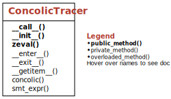

Concolic Fuzzing#
In the chapter on information flow, we have seen how one can use dynamic taints to produce more intelligent test cases than simply looking for program crashes. We have also seen how one can use the taints to update the grammar, and hence focus more on the dangerous methods.
While taints are helpful, uninterpreted strings is only one of the attack vectors. Can we say anything more about the properties of variables at any point in the execution? For example, can we say for sure that a function will always receive the buffers with the correct length?
Concolic execution offers a solution here. The idea of concolic execution over a function is as follows: We start with a sample input for the function, and execute the function under trace. At each point the execution passes through a conditional, we save the conditional encountered in the form of relations between symbolic variables. Here, a symbolic variable can be thought of as a sort of placeholder for the real variable, sort of like the x in solving for x in Algebra. The symbolic variables can be used to specify relations without actually solving them.
With concolic execution, one can collect the constraints that an execution path encounters, and use it to answer questions about the program behavior at any point we prefer along the program execution path. We can further use concolic execution to enhance fuzzing.
In this chapter, we explore in depth how to execute a Python function concolically, and how concolic execution can be used to enhance fuzzing.
from bookutils import YouTubeVideo
YouTubeVideo('KDcMjWX5ulU')
Prerequisites
You should have read the chapter on coverage.
You should have read the chapter on information flow.
A familiarity with the basic idea of SMT solvers would be useful.
import bookutils.setup
from typing import List, Callable, Dict, Tuple
Synopsis#
To use the code provided in this chapter, write
>>> from fuzzingbook.ConcolicFuzzer import <identifier>
and then make use of the following features.
This chapter defines two main classes: SimpleConcolicFuzzer and ConcolicGrammarFuzzer. The SimpleConcolicFuzzer first uses a sample input to collect predicates encountered. The fuzzer then negates random predicates to generate new input constraints. These, when solved, produce inputs that explore paths that are close to the original path.
ConcolicTracer#
At the heart of both fuzzers lies the concept of a concolic tracer, capturing symbolic variables and path conditions as a program gets executed.
ConcolicTracer is used in a with block; the syntax tracer[function] executes function within the tracer while capturing conditions. Here is an example for the cgi_decode() function:
>>> with ConcolicTracer() as _:
>>> _[cgi_decode]('a%20d')
Once executed, we can retrieve the symbolic variables in the decls attribute. This is a mapping of symbolic variables to types.
>>> _.decls
{'cgi_decode_s_str_1': 'String'}
The extracted path conditions can be found in the path attribute:
>>> _.path
[0 < Length(cgi_decode_s_str_1),
Not(str.substr(cgi_decode_s_str_1, 0, 1) == "+"),
Not(str.substr(cgi_decode_s_str_1, 0, 1) == "%"),
1 < Length(cgi_decode_s_str_1),
Not(str.substr(cgi_decode_s_str_1, 1, 1) == "+"),
str.substr(cgi_decode_s_str_1, 1, 1) == "%",
Not(str.substr(cgi_decode_s_str_1, 2, 1) == "0"),
Not(str.substr(cgi_decode_s_str_1, 2, 1) == "1"),
str.substr(cgi_decode_s_str_1, 2, 1) == "2",
str.substr(cgi_decode_s_str_1, 3, 1) == "0",
4 < Length(cgi_decode_s_str_1),
Not(str.substr(cgi_decode_s_str_1, 4, 1) == "+"),
Not(str.substr(cgi_decode_s_str_1, 4, 1) == "%"),
Not(5 < Length(cgi_decode_s_str_1))]
The context attribute holds a pair of decls and path attributes; this is useful for passing it into the ConcolicTracer constructor.
>>> assert _.context == (_.decls, _.path)
We can solve these constraints to obtain a value for the function parameters that follow the same path as the original (traced) invocation:
>>> _.zeval()
('sat', {'s': ('A%20B', 'String')})
The zeval() function also allows passing alternate or negated constraints. See the chapter for examples.

SimpleConcolicFuzzer#
The constraints obtained from ConcolicTracer are added to the concolic fuzzer as follows:
>>> scf = SimpleConcolicFuzzer()
>>> scf.add_trace(_, 'a%20d')
The concolic fuzzer then uses the constraints added to guide its fuzzing as follows:
>>> scf = SimpleConcolicFuzzer()
>>> for i in range(20):
>>> v = scf.fuzz()
>>> if v is None:
>>> break
>>> print(repr(v))
>>> with ExpectError(print_traceback=False):
>>> with ConcolicTracer() as _:
>>> _[cgi_decode](v)
>>> scf.add_trace(_, v)
' '
'%'
''
'AB'
'A+'
'%'
'A'
'AB'
'+'
IndexError: string index out of range (expected)
IndexError: string index out of range (expected)
IndexError: string index out of range (expected)
'%'
'A%'
'%'
'A+'
'A'
'AB'
'A'
'A+B'
'ABC'
IndexError: string index out of range (expected)
IndexError: string index out of range (expected)
IndexError: string index out of range (expected)
'AB%'
'A%'
IndexError: string index out of range (expected)
We see how the additional inputs generated explore additional paths.

ConcolicGrammarFuzzer#
The SimpleConcolicFuzzer simply explores all paths near the original path traversed by the sample input. It uses a simple mechanism to explore the paths that are near the paths that it knows about, and other than code paths, knows nothing about the input.
The ConcolicGrammarFuzzer on the other hand, knows about the input grammar, and can collect feedback from the subject under fuzzing. It can lift some constraints encountered to the grammar, enabling deeper fuzzing. It is used as follows:
>>> from InformationFlow import INVENTORY_GRAMMAR, SQLException
>>> cgf = ConcolicGrammarFuzzer(INVENTORY_GRAMMAR)
>>> cgf.prune_tokens(prune_tokens)
>>> for i in range(10):
>>> query = cgf.fuzz()
>>> print(query)
>>> with ConcolicTracer() as _:
>>> with ExpectError(print_traceback=False):
>>> try:
>>> res = _[db_select](query)
>>> print(repr(res))
>>> except SQLException as e:
>>> print(e)
>>> cgf.update_grammar(_)
>>> print()
insert into H (DZxQ) values (60366,'QR',-21.2981,6,38.7)
Table ('H') was not found
select 340.0 from i8g4
Table ('i8g4') was not found
delete from months where -16.98==Q000
Invalid WHERE ('-16.98==Q000')
update uKt set D=d,:=m,c=R,R=C where A==Q==M
Table ('uKt') was not found
insert into months (q491) values ('Ib^|}',2,'8/','k')
Column ('q491') was not found
select w from lU where 445==M(v/n*J!=a)>W-e/k-r(n)*G
Table ('lU') was not found
select (r),k-Q*f>Z,((s)),i>N,f!=t from FK9
Table ('FK9') was not found
update m5 set name=U,name=W where (d*D>k)==(d)
Table ('m5') was not found
select H2==h!=R,j-e+F*t,(L),p,W from p_
Table ('p_') was not found
delete from vehicles where _(w)+q/D/x>(e+H>u*b)
Invalid WHERE ('_(w)+q/D/x>(e+H>u*b)')

Tracking Constraints#
In the chapter on information flow, we have seen how dynamic taints can be used to direct fuzzing by indicating which part of input reached interesting places. However, dynamic taint tracking is limited in the information that it can propagate. For example, we might want to explore what happens when certain properties of the input changes.
For example, say we have a function factorial() that returns the factorial value of its input.
def factorial(n):
if n < 0:
return None
if n == 0:
return 1
if n == 1:
return 1
v = 1
while n != 0:
v = v * n
n = n - 1
return v
We exercise the function with a value of 5.
factorial(5)
120
Is this sufficient to explore all the features of the function? How do we know? One way to verify that we have explored all features is to look at the coverage obtained. First we need to extend the Coverage class from the chapter on coverage to provide us with coverage arcs.
from Coverage import Coverage
import inspect
class ArcCoverage(Coverage):
def traceit(self, frame, event, args):
if event != 'return':
f = inspect.getframeinfo(frame)
self._trace.append((f.function, f.lineno))
return self.traceit
def arcs(self):
t = [i for f, i in self._trace]
return list(zip(t, t[1:]))
Next, we use the Tracer to obtain the coverage arcs.
with ArcCoverage() as cov:
factorial(5)
We can now use the coverage arcs to visualize the coverage obtained.
from ControlFlow import to_graph, gen_cfg
to_graph(gen_cfg(inspect.getsource(factorial)), arcs=cov.arcs())
We see that the path [1, 2, 5, 8, 11, 12, 13, 14] is covered (green) but sub-paths such as [2, 3], [5, 6] and [8, 9] are unexplored (red). What we need is the ability to generate inputs such that the True branch is taken at 2. How do we do that?
Concolic Execution#
One way to cover additional branches is to look at the execution path being taken, and collect the conditional constraints that the path encounters. Then we can try to produce inputs that lead us to taking the non-traversed path.
First, let us step through the function.
lines = [i[1] for i in cov._trace if i[0] == 'factorial']
src = {i + 1: s for i, s in enumerate(
inspect.getsource(factorial).split('\n'))}
The line (1) is simply the entry point of the function. We know that the input is
n, which is an integer.
src[1]
'def factorial(n):'
The line (2) is a predicate
n < 0. Since the next line taken is line (5), we know that at this point in the execution path, the predicate wasfalse.
src[2], src[3], src[4], src[5]
(' if n < 0:', ' return None', '', ' if n == 0:')
We notice that this is one of the predicates where the true branch was not taken. How do we generate a value that takes the true branch here? One way is to use symbolic variables to represent the input, encode the constraint, and use an SMT Solver to solve the negation of the constraint.
As we mentioned in the introduction to the chapter, a symbolic variable can be thought of as a sort of placeholder for the real variable, sort of like the x in solving for x in Algebra. These variables can be used to encode constraints placed on the variables in the program. We identify what constraints the variable is supposed to obey, and finally produce a value that obeys all constraints imposed.
Solving Constraints#
To solve these constraints, one can use a Satisfiability Modulo Theories (SMT) solver. An SMT solver is built on top of a SATISFIABILITY (SAT) solver. A SAT solver is being used to check whether boolean formulas in first order logic (e.g. (a | b ) & (~a | ~b)) can be satisfied using any assignments for the variables (e.g a = true, b = false). An SMT solver extends these SAT solvers to specific background theories – for example, theory of integers, or theory of strings. That is, given a string constraint expressed as a formula with string variables (e.g. h + t == 'hello,world'), an SMT solver that understands theory of strings can be used to check if that constraint can be satisfied, and if satisfiable, provide an instantiation of concrete values for the variables used in the formula (e.g h = 'hello,', t = 'world').
We use the SMT solver Z3 in this chapter.
import z3 # type: ignore
z3_ver = z3.get_version()
print(z3_ver)
(4, 11, 2, 0)
assert z3_ver >= (4, 8, 13, 0), \
f"Please install z3-solver 4.8.13.0 or later - you have {z3_ver}"
Let us set up Z3 first. To ensure that the string constraints we use in this chapter are successfully evaluated, we need to specify the z3str3 solver. Further, we set the timeout for Z3 computations to 30 seconds.
# z3.set_option('smt.string_solver', 'z3str3')
z3.set_option('timeout', 30 * 1000) # milliseconds
To encode constraints, we need symbolic variables. Here, we make zn a placeholder for the Z3 symbolic integer variable n.
zn = z3.Int('n')
Remember the constraint (n < 0) from line 2 in factorial()? We can now encode the constraint as follows.
zn < 0
We previously traced factorial(5). We saw that with input 5, the execution took the else branch on the predicate n < 0. We can express this observation as follows.
z3.Not(zn < 0)
Let us now solve constraints. The z3.solve() method checks if the constraints are satisfiable; if they are, it also provides values for variables such that the constraints are satisfied. For example, we can ask Z3 for an input that will take the else branch as follows:
z3.solve(z3.Not(zn < 0))
[n = 0]
This is a solution (albeit a trivial one). SMT solvers can be used to solve much harder problems. For example, here is how one can solve a quadratic equation.
x = z3.Real('x')
eqn = (2 * x**2 - 11 * x + 5 == 0)
z3.solve(eqn)
[x = 5]
Again, this is one solution. We can ask z3 to give us another solution as follows.
z3.solve(x != 5, eqn)
[x = 1/2]
Indeed, both x = 5 and x = 1/2 are solutions to the quadratic equation \(2x^2 -11x + 5 = 0\)
Similarly, we can ask Z3 for an input that satisfies the constraint encoded in line 2 of factorial() so that we take the if branch.
z3.solve(zn < 0)
[n = -1]
That is, if one uses -1 as an input to factorial(), it is guaranteed to take the if branch in line 2 during execution.
Let us try using that with our coverage. Here, the -1 is the solution from above.
with cov as cov:
factorial(-1)
to_graph(gen_cfg(inspect.getsource(factorial)), arcs=cov.arcs())
Ok, so we have managed to cover a little more of the graph. Let us continue with our original input of factorial(5):
In line (5) we encounter a new predicate
n == 0, for which we again took the false branch.
src[5]
' if n == 0:'
The predicates required, to follow the path until this point are as follows.
predicates = [z3.Not(zn < 0), z3.Not(zn == 0)]
If we continue to line (8), we encounter another predicate, for which again, we took the
falsebranch
src[8]
' if n == 1:'
The predicates encountered so far are as follows
predicates = [z3.Not(zn < 0), z3.Not(zn == 0), z3.Not(zn == 1)]
To take the branch at (6), we essentially have to obey the predicates until that point, but invert the last predicate.
last = len(predicates) - 1
z3.solve(predicates[0:-1] + [z3.Not(predicates[-1])])
[n = 1]
What we are doing here is tracing the execution corresponding to a particular input factorial(5), using concrete values, and along with it, keeping symbolic shadow variables that enable us to capture the constraints. As we mentioned in the introduction, this particular method of execution where one tracks concrete execution using symbolic variables is called Concolic Execution.
How do we automate this process? One method is to use a similar infrastructure as that of the chapter on information flow, and use the Python inheritance to create symbolic proxy objects that can track the concrete execution.
A Concolic Tracer#
Let us now define a class to collect symbolic variables and path conditions during an execution. The idea is to have a ConcolicTracer class that is invoked in a with block. To execute a function while tracing its path conditions, we need to transform its arguments, which we do by invoking functions through a [] item access.
This is a typical usage of a ConcolicTracer:
with ConcolicTracer as _:
_.[function](args, ...)
After execution, we can access the symbolic variables in the decls attribute:
_.decls
whereas the path attribute lists the precondition paths encountered:
_.path
The context attribute contains a pair of declarations and paths:
_.context
If you read this for the first time, skip the implementation and head right to the examples.
Excursion: Implementing ConcolicTracer#
Let us now implement ConcolicTracer.
Its constructor accepts a single context argument which contains the declarations for the symbolic variables seen so far, and path conditions seen so far. We only need this in case of nested contexts.
class ConcolicTracer:
"""Trace function execution, tracking variables and path conditions"""
def __init__(self, context=None):
"""Constructor."""
self.context = context if context is not None else ({}, [])
self.decls, self.path = self.context
We add the enter and exit methods for the with block.
class ConcolicTracer(ConcolicTracer):
def __enter__(self):
return self
def __exit__(self, exc_type, exc_value, tb):
return
We use introspection to determine the arguments to the function, which is hooked into the getitem() method.
class ConcolicTracer(ConcolicTracer):
def __getitem__(self, fn):
self.fn = fn
self.fn_args = {i: None for i in inspect.signature(fn).parameters}
return self
Finally, the function itself is invoked using the call method.
class ConcolicTracer(ConcolicTracer):
def __call__(self, *args):
self.result = self.fn(*self.concolic(args))
return self.result
For now, we define concolic() as a transparent function. It will be modified to produce symbolic variables later.
class ConcolicTracer(ConcolicTracer):
def concolic(self, args):
return args
We now have things in place for tracing functions:
with ConcolicTracer() as _:
_[factorial](1)
And for retrieving results (but not actually computing them):
_.decls
{}
_.path
[]
Both decls and path attributes will be set by concolic proxy objects, which we define next.
Concolic Proxy Objects#
We now define the concolic proxy objects that can be used for concolic tracing. First, we define the zproxy_create() method that given a class name, correctly creates an instance of that class, and the symbolic corresponding variable, and registers the symbolic variable in the context information context.
def zproxy_create(cls, z_type, z3var, context, z_name, v=None):
z_value = cls(context, z3var(z_name), v)
context[0][z_name] = z_type # add to decls
return z_value
A Proxy Class for Booleans#
First, we define the zbool class which is used to track the predicates encountered. It is a wrapper class that contains both symbolic (z) and concrete (v) values. The concrete value is used to determine which path to take, and the symbolic value is used to collect the predicates encountered.
The initialization is done in two parts. The first one is using zproxy_create() to correctly initialize and register the shadow symbolic variable corresponding to the passed argument. This is used exclusively when the symbolic variable needs to be initialized first. In all other cases, the constructor is called with the preexisting symbolic value.
class zbool:
@classmethod
def create(cls, context, z_name, v):
return zproxy_create(cls, 'Bool', z3.Bool, context, z_name, v)
def __init__(self, context, z, v=None):
self.context = context
self.z = z
self.v = v
self.decl, self.path = self.context
Here is how it is used. We create a symbolic variable my_bool_arg with a value of True in the current context of the concolic tracer:
with ConcolicTracer() as _:
val = zbool.create(_.context, 'my_bool_arg', True)
We can now access the symbolic name in the z attribute:
val.z
The value is in the v attribute:
val.v
True
Note that the context of the enclosing ConcolicTracer() is automatically updated (via zproxy_create()) to hold the variable declarations and types:
_.context
({'my_bool_arg': 'Bool'}, [])
The context can also be reached through the context attribute; both point to the same data structure.
val.context
({'my_bool_arg': 'Bool'}, [])
Negation of Encoded formula#
The zbool class allows negation of its concrete and symbolic values.
class zbool(zbool):
def __not__(self):
return zbool(self.context, z3.Not(self.z), not self.v)
Here is how it can be used.
with ConcolicTracer() as _:
val = zbool.create(_.context, 'my_bool_arg', True).__not__()
val.z
val.v
False
_.context
({'my_bool_arg': 'Bool'}, [])
Registering Predicates on Conditionals#
The zbool class is being used to track Boolean conditions that arise during program execution. It tracks such conditions by registering the corresponding symbolic expressions in the context as soon as it is evaluated. On evaluation, the __bool__() method is called; so we can hook into this one:
class zbool(zbool):
def __bool__(self):
r, pred = (True, self.z) if self.v else (False, z3.Not(self.z))
self.path.append(pred)
return r
The zbool class can be used to keep track of Boolean values and conditions encountered during the execution. For example, we can encode the conditions encountered by Line 6 in factorial() as follows:
First, we define the concrete value (ca), and its shadow symbolic variable (za).
ca = 5
za = z3.Int('a')
Then, we wrap it in zbool, and use it in a conditional, forcing the conditional to be registered in the context.
with ConcolicTracer() as _:
if zbool(_.context, za == z3.IntVal(5), ca == 5):
print('success')
success
We can retrieve the registered conditional as follows.
_.path
[5 == a]
A Proxy Class for Integers#
Next, we define a symbolic wrapper zint for int.
This class keeps track of the int variables used and the predicates encountered in context. Finally, it also keeps the concrete value so that it can be used to determine the path to take. As the zint extends the primitive int class, we have to define a new method to open it for extension.
class zint(int):
def __new__(cls, context, zn, v, *args, **kw):
return int.__new__(cls, v, *args, **kw)
As in the case of zbool, the initialization takes place in two parts. The first using create() if a new symbolic argument is being registered, and then the usual initialization.
class zint(zint):
@classmethod
def create(cls, context, zn, v=None):
return zproxy_create(cls, 'Int', z3.Int, context, zn, v)
def __init__(self, context, z, v=None):
self.z, self.v = z, v
self.context = context
The int value of a zint object is its concrete value.
class zint(zint):
def __int__(self):
return self.v
def __pos__(self):
return self.v
Using these proxies is as follows.
with ConcolicTracer() as _:
val = zint.create(_.context, 'int_arg', 0)
val.z
val.v
0
_.context
({'int_arg': 'Int'}, [])
The zint class is often used to do arithmetic with, or compare to other ints. These ints can be either a variable or a constant value. We define a helper method _zv() that checks what kind of int a given value is, and produces the correct symbolic equivalent.
class zint(zint):
def _zv(self, o):
return (o.z, o.v) if isinstance(o, zint) else (z3.IntVal(o), o)
It can be used as follows
with ConcolicTracer() as _:
val = zint.create(_.context, 'int_arg', 0)
val._zv(0)
(0, 0)
val._zv(val)
(int_arg, 0)
Equality between Integers#
Two integers can be compared for equality using ne and eq.
class zint(zint):
def __ne__(self, other):
z, v = self._zv(other)
return zbool(self.context, self.z != z, self.v != v)
def __eq__(self, other):
z, v = self._zv(other)
return zbool(self.context, self.z == z, self.v == v)
We also define req using eq in case the int being compared is on the left-hand side.
class zint(zint):
def __req__(self, other):
return self.__eq__(other)
It can be used as follows.
with ConcolicTracer() as _:
ia = zint.create(_.context, 'int_a', 0)
ib = zint.create(_.context, 'int_b', 0)
v1 = ia == ib
v2 = ia != ib
v3 = 0 != ib
print(v1.z, v2.z, v3.z)
int_a == int_b int_a != int_b 0 != int_b
Comparisons between Integers#
Integers can also be compared for ordering, and the methods for this are defined below.
class zint(zint):
def __lt__(self, other):
z, v = self._zv(other)
return zbool(self.context, self.z < z, self.v < v)
def __gt__(self, other):
z, v = self._zv(other)
return zbool(self.context, self.z > z, self.v > v)
We use the comparisons and equality operators to provide the other missing operators.
class zint(zint):
def __le__(self, other):
z, v = self._zv(other)
return zbool(self.context, z3.Or(self.z < z, self.z == z),
self.v < v or self.v == v)
def __ge__(self, other):
z, v = self._zv(other)
return zbool(self.context, z3.Or(self.z > z, self.z == z),
self.v > v or self.v == v)
These functions can be used as follows.
with ConcolicTracer() as _:
ia = zint.create(_.context, 'int_a', 0)
ib = zint.create(_.context, 'int_b', 1)
v1 = ia > ib
v2 = ia < ib
print(v1.z, v2.z)
v3 = ia >= ib
v4 = ia <= ib
print(v3.z, v4.z)
int_a > int_b int_a < int_b
Or(int_a > int_b, int_a == int_b) Or(int_a < int_b, int_a == int_b)
Binary Operators for Integers#
We implement relevant arithmetic operators for integers as described in the Python documentation. (The commented out operators are not directly available for z3.ArithRef. They need to be implemented separately if needed. See the exercises for how it can be done.)
INT_BINARY_OPS = [
'__add__',
'__sub__',
'__mul__',
'__truediv__',
# '__div__',
'__mod__',
# '__divmod__',
'__pow__',
# '__lshift__',
# '__rshift__',
# '__and__',
# '__xor__',
# '__or__',
'__radd__',
'__rsub__',
'__rmul__',
'__rtruediv__',
# '__rdiv__',
'__rmod__',
# '__rdivmod__',
'__rpow__',
# '__rlshift__',
# '__rrshift__',
# '__rand__',
# '__rxor__',
# '__ror__',
]
def make_int_binary_wrapper(fname, fun, zfun): # type: ignore
def proxy(self, other):
z, v = self._zv(other)
z_ = zfun(self.z, z)
v_ = fun(self.v, v)
if isinstance(v_, float):
# we do not implement float results yet.
assert round(v_) == v_
v_ = round(v_)
return zint(self.context, z_, v_)
return proxy
INITIALIZER_LIST: List[Callable] = []
def initialize():
for fn in INITIALIZER_LIST:
fn()
def init_concolic_1():
for fname in INT_BINARY_OPS:
fun = getattr(int, fname)
zfun = getattr(z3.ArithRef, fname)
setattr(zint, fname, make_int_binary_wrapper(fname, fun, zfun))
INITIALIZER_LIST.append(init_concolic_1)
init_concolic_1()
with ConcolicTracer() as _:
ia = zint.create(_.context, 'int_a', 0)
ib = zint.create(_.context, 'int_b', 1)
print((ia + ib).z)
print((ia + 10).z)
print((11 + ib).z)
print((ia - ib).z)
print((ia * ib).z)
print((ia / ib).z)
print((ia ** ib).z)
int_a + int_b
int_a + 10
11 + int_b
int_a - int_b
int_a*int_b
int_a/int_b
int_a**int_b
Integer Unary Operators#
We also implement the relevant unary operators as below.
INT_UNARY_OPS = [
'__neg__',
'__pos__',
# '__abs__',
# '__invert__',
# '__round__',
# '__ceil__',
# '__floor__',
# '__trunc__',
]
def make_int_unary_wrapper(fname, fun, zfun):
def proxy(self):
return zint(self.context, zfun(self.z), fun(self.v))
return proxy
def init_concolic_2():
for fname in INT_UNARY_OPS:
fun = getattr(int, fname)
zfun = getattr(z3.ArithRef, fname)
setattr(zint, fname, make_int_unary_wrapper(fname, fun, zfun))
INITIALIZER_LIST.append(init_concolic_2)
init_concolic_2()
We can use the unary operators we defined above as follows:
with ConcolicTracer() as _:
ia = zint.create(_.context, 'int_a', 0)
print((-ia).z)
print((+ia).z)
-int_a
int_a
Using an Integer in a Boolean Context#
An integer may be converted to a boolean context in conditionals or as part of boolean predicates such as or, and and not. In these cases, the __bool__() method gets called. Unfortunately, this method requires a primitive boolean value. Hence, we force the current integer formula to a boolean predicate and register it in the current context.
class zint(zint):
def __bool__(self):
# return zbool(self.context, self.z, self.v) <-- not allowed
# force registering boolean condition
if self != 0:
return True
return False
It is used as follows
with ConcolicTracer() as _:
za = zint.create(_.context, 'int_a', 1)
zb = zint.create(_.context, 'int_b', 0)
if za and zb:
print(1)
_.context
({'int_a': 'Int', 'int_b': 'Int'}, [0 != int_a, Not(0 != int_b)])
Remaining Methods of the ConcolicTracer#
We now complete some methods of the ConcolicTracer.
Translating to the SMT Expression Format#
Given that we are using an SMT Solver z3, it is often useful to retrieve the corresponding SMT expression for a symbolic expression. This can be used as an argument to z3 or other SMT solvers.
The format of the SMT expression (SMT-LIB) is as follows:
Variables declarations in S-EXP format. E.g. The following declares a symbolic integer variable
x
(declare-const x Int)
This declares a bit vector b of length 8
(declare-const b (_ BitVec 8))
This declares a symbolic real variable r
(declare-const x Real)
This declares a symbolic string variable s
(declare-const s String)
The declared variables can be used in logical formulas that are encoded in S-EXP format. For example, here is a logical formula.
(assert
(and
(= a b)
(= a c)
(! b c)))
Here is another example, using string variables.
(or (< 0 (str.indexof (str.substr my_str1 7 19) " where " 0))
(= (str.indexof (str.substr my_str1 7 19) " where " 0) 0))
class ConcolicTracer(ConcolicTracer):
def smt_expr(self, show_decl=False, simplify=False, path=[]):
r = []
if show_decl:
for decl in self.decls:
v = self.decls[decl]
v = '(_ BitVec 8)' if v == 'BitVec' else v
r.append("(declare-const %s %s)" % (decl, v))
path = path if path else self.path
if path:
path = z3.And(path)
if show_decl:
if simplify:
return '\n'.join([
*r,
"(assert %s)" % z3.simplify(path).sexpr()
])
else:
return '\n'.join(
[*r, "(assert %s)" % path.sexpr()])
else:
return z3.simplify(path).sexpr()
else:
return ''
To see how to use smt_expr(), let us consider an example. The triangle() function is used to determine if the given sides to a triangle result in an equilateral triangle, an isosceles triangle, or a scalene triangle. It is implemented as follows.
def triangle(a, b, c):
if a == b:
if b == c:
return 'equilateral'
else:
return 'isosceles'
else:
if b == c:
return 'isosceles'
else:
if a == c:
return 'isosceles'
else:
return 'scalene'
triangle(1, 2, 1)
'isosceles'
To make triangle() run under ConcolicTracer, we first define the (symbolic) arguments. The triangle being defined has sides 1, 1, 1. i.e. it is an equilateral triangle.
with ConcolicTracer() as _:
za = zint.create(_.context, 'int_a', 1)
zb = zint.create(_.context, 'int_b', 1)
zc = zint.create(_.context, 'int_c', 1)
triangle(za, zb, zc)
print(_.context)
({'int_a': 'Int', 'int_b': 'Int', 'int_c': 'Int'}, [int_a == int_b, int_b == int_c])
We can now call smt_expr() to retrieve the SMT expression as below.
print(_.smt_expr(show_decl=True))
(declare-const int_a Int)
(declare-const int_b Int)
(declare-const int_c Int)
(assert (and (= int_a int_b) (= int_b int_c)))
The collected predicates can also be solved directly using the Python z3 API.
z3.solve(_.path)
[int_c = 0, int_a = 0, int_b = 0]
Generating Fresh Names#
While using the proxy classes, we often will have to generate new symbolic variables, with names that have not been used before. For this, we define fresh_name() that always generates unique integers for names.
COUNTER = 0
def fresh_name():
global COUNTER
COUNTER += 1
return COUNTER
It can be used as follows:
fresh_name()
1
def reset_counter():
global COUNTER
COUNTER = 0
class ConcolicTracer(ConcolicTracer):
def __enter__(self):
reset_counter()
return self
def __exit__(self, exc_type, exc_value, tb):
return
Translating Arguments to Concolic Proxies#
We had previously defined concolic() as a transparent function. We now provide the full implementation of this function. It inspects a given function’s parameters, and infers the parameter types from the concrete arguments passed in. It then uses this information to instantiate the correct proxy classes for each argument.
class ConcolicTracer(ConcolicTracer):
def concolic(self, args):
my_args = []
for name, arg in zip(self.fn_args, args):
t = type(arg).__name__
zwrap = globals()['z' + t]
vname = "%s_%s_%s_%s" % (self.fn.__name__, name, t, fresh_name())
my_args.append(zwrap.create(self.context, vname, arg))
self.fn_args[name] = vname
return my_args
This is how it gets used:
with ConcolicTracer() as _:
_[factorial](5)
With the new concolic() method, the arguments to the factorial are correctly associated with symbolic variables, which allows us to retrieve the predicates encountered.
_.context
({'factorial_n_int_1': 'Int'},
[Not(0 > factorial_n_int_1),
Not(0 == factorial_n_int_1),
Not(1 == factorial_n_int_1),
0 != factorial_n_int_1,
0 != factorial_n_int_1 - 1,
0 != factorial_n_int_1 - 1 - 1,
0 != factorial_n_int_1 - 1 - 1 - 1,
0 != factorial_n_int_1 - 1 - 1 - 1 - 1,
Not(0 != factorial_n_int_1 - 1 - 1 - 1 - 1 - 1)])
As before, we can also print out the SMT expression which can be passed directly to command line SMT solvers.
print(_.smt_expr(show_decl=True))
(declare-const factorial_n_int_1 Int)
(assert (let ((a!1 (distinct 0 (- (- (- factorial_n_int_1 1) 1) 1)))
(a!2 (- (- (- (- factorial_n_int_1 1) 1) 1) 1)))
(and (not (> 0 factorial_n_int_1))
(not (= 0 factorial_n_int_1))
(not (= 1 factorial_n_int_1))
(distinct 0 factorial_n_int_1)
(distinct 0 (- factorial_n_int_1 1))
(distinct 0 (- (- factorial_n_int_1 1) 1))
a!1
(distinct 0 a!2)
(not (distinct 0 (- a!2 1))))))
We next define methods to evaluate the SMT expression both in Python and from command line.
Evaluating the Concolic Expressions#
We define zeval() to solve the predicates in a context, and return results. It has two modes. The python mode uses z3 Python API to solve and return the results. If the python mode is false, it writes the SMT expression to a file, and invokes the command line z3 for a solution.
class ConcolicTracer(ConcolicTracer):
def zeval(self, predicates=None, *,python=False, log=False):
"""Evaluate `predicates` in current context.
- If `python` is set, use the z3 Python API; otherwise use z3 standalone.
- If `log` is set, show input to z3.
Return a pair (`result`, `solution`) where
- `result` is either `'sat'` (satisfiable); then
solution` is a mapping of variables to (value, type) pairs; or
- `result` is not `'sat'`, indicating an error; then `solution` is `None`
"""
if predicates is None:
path = self.path
else:
path = list(self.path)
for i in sorted(predicates):
if len(path) > i:
path[i] = predicates[i]
else:
path.append(predicates[i])
if log:
print('Predicates in path:')
for i, p in enumerate(path):
print(i, p)
print()
r, sol = (zeval_py if python else zeval_smt)(path, self, log)
if r == 'sat':
return r, {k: sol.get(self.fn_args[k], None) for k in self.fn_args}
else:
return r, None
Using the Python API#
Given a set of predicates that the function encountered, and the tracer under which the function was executed, the zeval_py() function first declares the relevant symbolic variables, and uses the z3.Solver()to provide a set of inputs that would trace the same path through the function.
def zeval_py(path, cc, log):
for decl in cc.decls:
if cc.decls[decl] == 'BitVec':
v = "z3.%s('%s', 8)" % (cc.decls[decl], decl)
else:
v = "z3.%s('%s')" % (cc.decls[decl], decl)
exec(v)
s = z3.Solver()
s.add(z3.And(path))
if s.check() == z3.unsat:
return 'No Solutions', {}
elif s.check() == z3.unknown:
return 'Gave up', None
assert s.check() == z3.sat
m = s.model()
return 'sat', {d.name(): m[d] for d in m.decls()}
It can be used as follows:
with ConcolicTracer() as _:
_[factorial](5)
_.zeval(python=True)
('sat', {'n': 5})
That is, given the set of constraints, the assignment n == 5 conforms to all constraints.
Using the Command Line#
The zeval_smt() function writes the SMT expression to the file system, and calls the z3 SMT solver command line to solve it. The result of SMT expression is again an sexpr. Hence, we first define parse_sexp() to parse and return the correct values.
import re
import subprocess
SEXPR_TOKEN = r'''(?mx)
\s*(?:
(?P<bra>\()|
(?P<ket>\))|
(?P<token>[^"()\s]+)|
(?P<string>"[^"]*")
)'''
def parse_sexp(sexp):
stack, res = [], []
for elements in re.finditer(SEXPR_TOKEN, sexp):
kind, value = [(t, v) for t, v in elements.groupdict().items() if v][0]
if kind == 'bra':
stack.append(res)
res = []
elif kind == 'ket':
last, res = res, stack.pop(-1)
res.append(last)
elif kind == 'token':
res.append(value)
elif kind == 'string':
res.append(value[1:-1])
else:
assert False
return res
The parse_sexp() function can be used as follows
parse_sexp('abcd (hello 123 (world "hello world"))')
['abcd', ['hello', '123', ['world', 'hello world']]]
We now define zeval_smt() which uses the z3 command line directly, and uses parse_sexp() to parse and return the solutions to function arguments if any.
import tempfile
import os
Z3_BINARY = 'z3' # Z3 binary to invoke
Z3_OPTIONS = '-t:6000' # Z3 options - a soft timeout of 6000 milliseconds
def zeval_smt(path, cc, log):
s = cc.smt_expr(True, True, path)
with tempfile.NamedTemporaryFile(mode='w', suffix='.smt',
delete=False) as f:
f.write(s + "\n")
f.write("(check-sat)\n")
f.write("(get-model)\n")
if log:
print(open(f.name).read())
cmd = f"{Z3_BINARY} {Z3_OPTIONS} {f.name}"
if log:
print(cmd)
output = subprocess.getoutput(cmd)
os.remove(f.name)
if log:
print(output)
o = parse_sexp(output)
if not o:
return 'Gave up', None
kind = o[0]
if kind == 'unknown':
return 'Gave up', None
elif kind == 'timeout':
return 'Timeout', None
elif kind == 'unsat':
return 'No Solutions', {}
assert kind == 'sat', kind
if o[1][0] == 'model': # up to 4.8.8.0
return 'sat', {i[1]: (i[-1], i[-2]) for i in o[1][1:]}
else:
return 'sat', {i[1]: (i[-1], i[-2]) for i in o[1][0:]}
We can now use zeval() as follows.
with ConcolicTracer() as _:
_[factorial](5)
_.zeval(log=True)
Predicates in path:
0 Not(0 > factorial_n_int_1)
1 Not(0 == factorial_n_int_1)
2 Not(1 == factorial_n_int_1)
3 0 != factorial_n_int_1
4 0 != factorial_n_int_1 - 1
5 0 != factorial_n_int_1 - 1 - 1
6 0 != factorial_n_int_1 - 1 - 1 - 1
7 0 != factorial_n_int_1 - 1 - 1 - 1 - 1
8 Not(0 != factorial_n_int_1 - 1 - 1 - 1 - 1 - 1)
(declare-const factorial_n_int_1 Int)
(assert (and (<= 0 factorial_n_int_1)
(not (= 0 factorial_n_int_1))
(not (= 1 factorial_n_int_1))
(not (= 2 factorial_n_int_1))
(not (= 3 factorial_n_int_1))
(not (= 4 factorial_n_int_1))
(= 5 factorial_n_int_1)))
(check-sat)
(get-model)
z3 -t:6000 /var/folders/n2/xd9445p97rb3xh7m1dfx8_4h0006ts/T/tmp9aqp4ftz.smt
sat
(
(define-fun factorial_n_int_1 () Int
5)
)
('sat', {'n': ('5', 'Int')})
Indeed, we get similar results (n == 5) from using the command line as from using the Python API.
A Proxy Class for Strings#
Here, we define the proxy string class zstr. First we define our initialization routines. Since str is a primitive type, we define new to extend it.
class zstr(str):
def __new__(cls, context, zn, v):
return str.__new__(cls, v)
As before, initialization proceeds with create() and the constructor.
class zstr(zstr):
@classmethod
def create(cls, context, zn, v=None):
return zproxy_create(cls, 'String', z3.String, context, zn, v)
def __init__(self, context, z, v=None):
self.context, self.z, self.v = context, z, v
self._len = zint(context, z3.Length(z), len(v))
#self.context[1].append(z3.Length(z) == z3.IntVal(len(v)))
We also define _zv() helper to help us with methods that accept another string
class zstr(zstr):
def _zv(self, o):
return (o.z, o.v) if isinstance(o, zstr) else (z3.StringVal(o), o)
Hack to use the ASCII value of a character.#
Note: Temporary solution; This block should go away as soon as this commit is released, which allows us to use the Python API directly.
from typing import Union, Optional, Dict, Generator, Set
def visit_z3_expr(
e: Union[z3.ExprRef, z3.QuantifierRef],
seen: Optional[Dict[Union[z3.ExprRef, z3.QuantifierRef], bool]] = None) -> \
Generator[Union[z3.ExprRef, z3.QuantifierRef], None, None]:
if seen is None:
seen = {}
elif e in seen:
return
seen[e] = True
yield e
if z3.is_app(e):
for ch in e.children():
for e in visit_z3_expr(ch, seen):
yield e
return
if z3.is_quantifier(e):
for e in visit_z3_expr(e.body(), seen):
yield e
return
def is_z3_var(e: z3.ExprRef) -> bool:
return z3.is_const(e) and e.decl().kind() == z3.Z3_OP_UNINTERPRETED
def get_all_vars(e: z3.ExprRef) -> Set[z3.ExprRef]:
return {sub for sub in visit_z3_expr(e) if is_z3_var(sub)}
def z3_ord(str_expr: z3.SeqRef) -> z3.ArithRef:
return z3.parse_smt2_string(
f"(assert (= 42 (str.to_code {str_expr.sexpr()})))",
decls={str(c): c for c in get_all_vars(str_expr)}
)[0].children()[1]
def z3_chr(int_expr: z3.ArithRef) -> z3.SeqRef:
return z3.parse_smt2_string(
f"(assert (= \"4\" (str.from_code {int_expr.sexpr()})))",
decls={str(c): c for c in get_all_vars(int_expr)}
)[0].children()[1]
Retrieving Ordinal Value#
We define zord that given a symbolic one character long string, obtains the ord() for that.
def zord(context, c):
return z3_ord(c)
We use it as follows
zc = z3.String('arg_%d' % fresh_name())
with ConcolicTracer() as _:
zi = zord(_.context, zc)
No new variables are defined.
_.context
({}, [])
Here is the smtlib representation.
zi.sexpr()
'(str.to_code arg_2)'
We can specify what the result of ord() should be, and call z3.solve() to provide us with a solution that will provide the required result.
(zi == 65).sexpr()
'(= (str.to_code arg_2) 65)'
z3.solve([zi == 65])
[arg_2 = "A"]
Translating an Ordinal Value to ASCII#
Similarly, we can convert the ASCII value back to a single character string using zchr()
def zchr(context, i):
return z3_chr(i)
For using it, we first define a bitvector that is 8 bits long.
i = z3.Int('ival_%d' % fresh_name())
We can now retrieve the chr() representation as below.
with ConcolicTracer() as _:
zc = zchr(_.context, i)
No new variables are defined.
_.context
({}, [])
(zc== z3.StringVal('a')).sexpr()
'(= (str.from_code ival_1) "a")'
As before, we can specify what the end result of calling chr() should be to get the original argument.
z3.solve([zc == z3.StringVal('a')])
[ival_1 = 97]
Equality between Strings#
The equality of zstr is defined similar to that of zint
class zstr(zstr):
def __eq__(self, other):
z, v = self._zv(other)
return zbool(self.context, self.z == z, self.v == v)
def __req__(self, other):
return self.__eq__(other)
The zstr class is used as follows.
def tstr1(s):
if s == 'h':
return True
else:
return False
with ConcolicTracer() as _:
r = _[tstr1]('h')
_.zeval()
('sat', {'s': ('h', 'String')})
It works even if we have more than one character.
def tstr1(s): # type: ignore
if s == 'hello world':
return True
else:
return False
with ConcolicTracer() as _:
r = _[tstr1]('hello world')
_.context
({'tstr1_s_str_1': 'String'}, [tstr1_s_str_1 == "hello world"])
_.zeval()
('sat', {'s': ('hello world', 'String')})
Length of Strings#
Unfortunately, in Python, we can’t override len() to return a new datatype. Hence, we work around that.
class zstr(zstr):
def __len__(self):
raise NotImplemented()
class zstr(zstr):
def length(self):
return self._len
with ConcolicTracer() as _:
za = zstr.create(_.context, 'str_a', "s")
if za.length() > 0:
print(1)
1
_.context
({'str_a': 'String'}, [0 < Length(str_a)])
def tstr2(s):
if s.length() > 1:
return True
else:
return False
with ConcolicTracer() as _:
r = _[tstr2]('hello world')
_.context
({'tstr2_s_str_1': 'String'}, [1 < Length(tstr2_s_str_1)])
_.zeval(log=True)
Predicates in path:
0 1 < Length(tstr2_s_str_1)
(declare-const tstr2_s_str_1 String)
(assert (not (<= (str.len tstr2_s_str_1) 1)))
(check-sat)
(get-model)
z3 -t:6000 /var/folders/n2/xd9445p97rb3xh7m1dfx8_4h0006ts/T/tmpwlyj0q93.smt
sat
(
(define-fun tstr2_s_str_1 () String
"AB")
)
('sat', {'s': ('AB', 'String')})
Concatenation of Strings#
What if we need to concatenate two strings? We need additional helpers to accomplish that.
class zstr(zstr):
def __add__(self, other):
z, v = self._zv(other)
return zstr(self.context, self.z + z, self.v + v)
def __radd__(self, other):
return self.__add__(other)
Here is how it can be used. First, we create the wrapped arguments
with ConcolicTracer() as _:
v1, v2 = [zstr.create(_.context, 'arg_%d' % fresh_name(), s)
for s in ['hello', 'world']]
if (v1 + ' ' + v2) == 'hello world':
print('hello world')
hello world
The addition of symbolic variables is preserved in context
_.context
({'arg_1': 'String', 'arg_2': 'String'},
[Concat(Concat(arg_1, " "), arg_2) == "hello world"])
Producing Substrings#
Similarly, accessing substrings also require extra help.
class zstr(zstr):
def __getitem__(self, idx):
if isinstance(idx, slice):
start, stop, step = idx.indices(len(self.v))
assert step == 1 # for now
assert stop >= start # for now
rz = z3.SubString(self.z, start, stop - start)
rv = self.v[idx]
elif isinstance(idx, int):
rz = z3.SubString(self.z, idx, 1)
rv = self.v[idx]
else:
assert False # for now
return zstr(self.context, rz, rv)
def __iter__(self):
return zstr_iterator(self.context, self)
An Iterator Class for Strings#
We define the iterator as follows.
class zstr_iterator():
def __init__(self, context, zstr):
self.context = context
self._zstr = zstr
self._str_idx = 0
self._str_max = zstr._len # intz is not an _int_
def __next__(self):
if self._str_idx == self._str_max: # intz#eq
raise StopIteration
c = self._zstr[self._str_idx]
self._str_idx += 1
return c
def __len__(self):
return self._len
Here is how it can be used.
def tstr3(s):
if s[0] == 'h' and s[1] == 'e' and s[3] == 'l':
return True
else:
return False
with ConcolicTracer() as _:
r = _[tstr3]('hello')
Again, the context shows predicates encountered.
_.context
({'tstr3_s_str_1': 'String'},
[str.substr(tstr3_s_str_1, 0, 1) == "h",
str.substr(tstr3_s_str_1, 1, 1) == "e",
str.substr(tstr3_s_str_1, 3, 1) == "l"])
The function zeval() returns a solution for the predicate. Note that the value returned is not exactly the argument that we passed in. This is a consequence of the predicates we have. That is, we have no constraints on what the character value on s[2] should be.
_.zeval()
('sat', {'s': ('heAl', 'String')})
Translating to Upper and Lower Equivalents#
A major complication is supporting upper() and lower() methods. We use the previously defined zchr() and zord() functions to accomplish this.
class zstr(zstr):
def upper(self):
empty = ''
ne = 'empty_%d' % fresh_name()
result = zstr.create(self.context, ne, empty)
self.context[1].append(z3.StringVal(empty) == result.z)
cdiff = (ord('a') - ord('A'))
for i in self:
oz = zord(self.context, i.z)
uz = zchr(self.context, oz - cdiff)
rz = z3.And([oz >= ord('a'), oz <= ord('z')])
ov = ord(i.v)
uv = chr(ov - cdiff)
rv = ov >= ord('a') and ov <= ord('z')
if zbool(self.context, rz, rv):
i = zstr(self.context, uz, uv)
else:
i = zstr(self.context, i.z, i.v)
result += i
return result
The lower() function is similar to upper() except that the character ranges are switched, and the lowercase is above uppercase. Hence, we add the difference to the ordinal to make a character to lowercase.
class zstr(zstr):
def lower(self):
empty = ''
ne = 'empty_%d' % fresh_name()
result = zstr.create(self.context, ne, empty)
self.context[1].append(z3.StringVal(empty) == result.z)
cdiff = (ord('a') - ord('A'))
for i in self:
oz = zord(self.context, i.z)
uz = zchr(self.context, oz + cdiff)
rz = z3.And([oz >= ord('A'), oz <= ord('Z')])
ov = ord(i.v)
uv = chr(ov + cdiff)
rv = ov >= ord('A') and ov <= ord('Z')
if zbool(self.context, rz, rv):
i = zstr(self.context, uz, uv)
else:
i = zstr(self.context, i.z, i.v)
result += i
return result
Here is how upper() is used.
def tstr4(s):
if s.upper() == 'H':
return True
else:
return False
with ConcolicTracer() as _:
r = _[tstr4]('h')
Again, we use zeval() to solve the collected constraints, and verify that our constraints are correct.
_.zeval()
('sat', {'s': ('h', 'String')})
Here is a larger example using lower():
def tstr5(s):
if s.lower() == 'hello world':
return True
else:
return False
with ConcolicTracer() as _:
r = _[tstr5]('Hello World')
_.zeval()
('sat', {'s': ('Hello World', 'String')})
Again, we obtain the right input value.
Checking for String Prefixes#
We define startswith().
class zstr(zstr):
def startswith(self, other, beg=0, end=None):
assert end is None # for now
assert isinstance(beg, int) # for now
zb = z3.IntVal(beg)
others = other if isinstance(other, tuple) else (other, )
last = False
for o in others:
z, v = self._zv(o)
r = z3.IndexOf(self.z, z, zb)
last = zbool(self.context, r == zb, self.v.startswith(v))
if last:
return last
return last
An example.
def tstr6(s):
if s.startswith('hello'):
return True
else:
return False
with ConcolicTracer() as _:
r = _[tstr6]('hello world')
_.zeval()
('sat', {'s': ('helloAhello', 'String')})
with ConcolicTracer() as _:
r = _[tstr6]('my world')
_.zeval()
('sat', {'s': ('', 'String')})
As before, the predicates only ensure that the startswith() returned a true value. Hence, our solution reflects that.
Finding Substrings#
We also define find()
class zstr(zstr):
def find(self, other, beg=0, end=None):
assert end is None # for now
assert isinstance(beg, int) # for now
zb = z3.IntVal(beg)
z, v = self._zv(other)
zi = z3.IndexOf(self.z, z, zb)
vi = self.v.find(v, beg, end)
return zint(self.context, zi, vi)
An example.
def tstr7(s):
if s.find('world') != -1:
return True
else:
return False
with ConcolicTracer() as _:
r = _[tstr7]('hello world')
_.zeval()
('sat', {'s': ('worldAworld', 'String')})
As before, the predicates only ensure that the find() returned a value greater than -1. Hence, our solution reflects that.
Remove Space from Ends#
We next implement strip().
import string
class zstr(zstr):
def rstrip(self, chars=None):
if chars is None:
chars = string.whitespace
if self._len == 0:
return self
else:
last_idx = self._len - 1
cz = z3.SubString(self.z, last_idx.z, 1)
cv = self.v[-1]
zcheck_space = z3.Or([cz == z3.StringVal(char) for char in chars])
vcheck_space = any(cv == char for char in chars)
if zbool(self.context, zcheck_space, vcheck_space):
return zstr(self.context, z3.SubString(self.z, 0, last_idx.z),
self.v[0:-1]).rstrip(chars)
else:
return self
def tstr8(s):
if s.rstrip(' ') == 'a b':
return True
else:
return False
with ConcolicTracer() as _:
r = _[tstr8]('a b ')
print(r)
True
_.zeval()
('sat', {'s': ('a b ', 'String')})
class zstr(zstr):
def lstrip(self, chars=None):
if chars is None:
chars = string.whitespace
if self._len == 0:
return self
else:
first_idx = 0
cz = z3.SubString(self.z, 0, 1)
cv = self.v[0]
zcheck_space = z3.Or([cz == z3.StringVal(char) for char in chars])
vcheck_space = any(cv == char for char in chars)
if zbool(self.context, zcheck_space, vcheck_space):
return zstr(self.context, z3.SubString(
self.z, 1, self._len.z), self.v[1:]).lstrip(chars)
else:
return self
def tstr9(s):
if s.lstrip(' ') == 'a b':
return True
else:
return False
with ConcolicTracer() as _:
r = _[tstr9](' a b')
print(r)
True
_.zeval()
('sat', {'s': (' a b', 'String')})
class zstr(zstr):
def strip(self, chars=None):
return self.lstrip(chars).rstrip(chars)
Example usage.
def tstr10(s):
if s.strip() == 'a b':
return True
else:
return False
with ConcolicTracer() as _:
r = _[tstr10](' a b ')
print(r)
True
_.zeval()
('sat', {'s': ('\\u{c}\\u{a}\\u{9}\\u{a}a b\\u{d}\\u{d}', 'String')})
The strip() has generated the right constraints.
Splitting Strings#
We implement string split() as follows.
class zstr(zstr):
def split(self, sep=None, maxsplit=-1):
assert sep is not None # default space based split is complicated
assert maxsplit == -1 # for now.
zsep = z3.StringVal(sep)
zl = z3.Length(zsep)
# zi would be the length of prefix
zi = z3.IndexOf(self.z, zsep, z3.IntVal(0))
# Z3Bug: There is a bug in the `z3.IndexOf` method which returns
# `z3.SeqRef` instead of `z3.ArithRef`. So we need to fix it.
zi = z3.ArithRef(zi.ast, zi.ctx)
vi = self.v.find(sep)
if zbool(self.context, zi >= z3.IntVal(0), vi >= 0):
zprefix = z3.SubString(self.z, z3.IntVal(0), zi)
zmid = z3.SubString(self.z, zi, zl)
zsuffix = z3.SubString(self.z, zi + zl,
z3.Length(self.z))
return [zstr(self.context, zprefix, self.v[0:vi])] + zstr(
self.context, zsuffix, self.v[vi + len(sep):]).split(
sep, maxsplit)
else:
return [self]
def tstr11(s):
if s.split(',') == ['a', 'b', 'c']:
return True
else:
return False
with ConcolicTracer() as _:
r = _[tstr11]('a,b,c')
print(r)
True
_.zeval()
('sat', {'s': ('a,b,c', 'String')})
Trip Wire#
For easier debugging, we abort any calls to methods in str that are not overridden by zstr.
def make_str_abort_wrapper(fun):
def proxy(*args, **kwargs):
raise Exception('%s Not implemented in `zstr`' % fun.__name__)
return proxy
def init_concolic_3():
strmembers = inspect.getmembers(zstr, callable)
zstrmembers = {m[0] for m in strmembers if len(
m) == 2 and 'zstr' in m[1].__qualname__}
for name, fn in inspect.getmembers(str, callable):
# Omitted 'splitlines' as this is needed for formatting output in
# IPython/Jupyter
if name not in zstrmembers and name not in [
'splitlines',
'__class__',
'__contains__',
'__delattr__',
'__dir__',
'__format__',
'__ge__',
'__getattribute__',
'__getnewargs__',
'__gt__',
'__hash__',
'__le__',
'__len__',
'__lt__',
'__mod__',
'__mul__',
'__ne__',
'__reduce__',
'__reduce_ex__',
'__repr__',
'__rmod__',
'__rmul__',
'__setattr__',
'__sizeof__',
'__str__']:
setattr(zstr, name, make_str_abort_wrapper(fn))
INITIALIZER_LIST.append(init_concolic_3)
init_concolic_3()
End of Excursion#
Example: Triangle#
We previously showed how to run triangle() under ConcolicTracer.
with ConcolicTracer() as _:
print(_[triangle](1, 2, 3))
scalene
The symbolic variables are as follows:
_.decls
{'triangle_a_int_1': 'Int',
'triangle_b_int_2': 'Int',
'triangle_c_int_3': 'Int'}
The predicates are as follows:
_.path
[Not(triangle_a_int_1 == triangle_b_int_2),
Not(triangle_b_int_2 == triangle_c_int_3),
Not(triangle_a_int_1 == triangle_c_int_3)]
Using zeval(), we solve these path conditions and obtain a solution. We find that Z3 gives us three distinct integer values:
_.zeval()
('sat',
{'a': ('0', 'Int'), 'b': (['-', '2'], 'Int'), 'c': (['-', '1'], 'Int')})
(Note that some values may be negative. Indeed, triangle() works with negative length values, too, even if real triangles only have positive lengths.)
If we invoke triangle() with these very values, we take the exact same path as the original input:
triangle(0, -2, -1)
'scalene'
We can have z3 negate individual conditions – and thus take different paths. First, we retrieve the symbolic variables.
za, zb, zc = [z3.Int(s) for s in _.decls.keys()]
za, zb, zc
(triangle_a_int_1, triangle_b_int_2, triangle_c_int_3)
Then, we pass a negated predicate to zeval(). The key (here: 1) determines which predicate the new predicate will replace.
_.zeval({1: zb == zc})
('sat', {'a': ('1', 'Int'), 'b': ('0', 'Int'), 'c': ('0', 'Int')})
triangle(1, 0, 1)
'isosceles'
The updated predicate returns isosceles as expected. By negating further conditions, we can systematically explore all branches in triangle().
Example: Decoding CGI Strings#
Let us apply ConcolicTracer on our example program cgi_decode() from the chapter on coverage. Note that we need to rewrite its code slightly, as the hash lookups in hex_values can not be used for transferring constraints yet.
def cgi_decode(s):
"""Decode the CGI-encoded string `s`:
* replace "+" by " "
* replace "%xx" by the character with hex number xx.
Return the decoded string. Raise `ValueError` for invalid inputs."""
# Mapping of hex digits to their integer values
hex_values = {
'0': 0, '1': 1, '2': 2, '3': 3, '4': 4,
'5': 5, '6': 6, '7': 7, '8': 8, '9': 9,
'a': 10, 'b': 11, 'c': 12, 'd': 13, 'e': 14, 'f': 15,
'A': 10, 'B': 11, 'C': 12, 'D': 13, 'E': 14, 'F': 15,
}
t = ''
i = 0
while i < s.length():
c = s[i]
if c == '+':
t += ' '
elif c == '%':
digit_high, digit_low = s[i + 1], s[i + 2]
i = i + 2
found = 0
v = 0
for key in hex_values:
if key == digit_high:
found = found + 1
v = hex_values[key] * 16
break
for key in hex_values:
if key == digit_low:
found = found + 1
v = v + hex_values[key]
break
if found == 2:
if v >= 128:
# z3.StringVal(urllib.parse.unquote('%80')) <-- bug in z3
raise ValueError("Invalid encoding")
t = t + chr(v)
else:
raise ValueError("Invalid encoding")
else:
t = t + c
i = i + 1
return t
with ConcolicTracer() as _:
_[cgi_decode]('')
_.context
({'cgi_decode_s_str_1': 'String'}, [Not(0 < Length(cgi_decode_s_str_1))])
with ConcolicTracer() as _:
_[cgi_decode]('a%20d')
Once executed, we can retrieve the symbolic variables in the decls attribute. This is a mapping of symbolic variables to types.
_.decls
{'cgi_decode_s_str_1': 'String'}
The extracted path conditions can be found in the path attribute:
_.path
[0 < Length(cgi_decode_s_str_1),
Not(str.substr(cgi_decode_s_str_1, 0, 1) == "+"),
Not(str.substr(cgi_decode_s_str_1, 0, 1) == "%"),
1 < Length(cgi_decode_s_str_1),
Not(str.substr(cgi_decode_s_str_1, 1, 1) == "+"),
str.substr(cgi_decode_s_str_1, 1, 1) == "%",
Not(str.substr(cgi_decode_s_str_1, 2, 1) == "0"),
Not(str.substr(cgi_decode_s_str_1, 2, 1) == "1"),
str.substr(cgi_decode_s_str_1, 2, 1) == "2",
str.substr(cgi_decode_s_str_1, 3, 1) == "0",
4 < Length(cgi_decode_s_str_1),
Not(str.substr(cgi_decode_s_str_1, 4, 1) == "+"),
Not(str.substr(cgi_decode_s_str_1, 4, 1) == "%"),
Not(5 < Length(cgi_decode_s_str_1))]
The context attribute holds a pair of decls and path attributes; this is useful for passing it into the ConcolicTracer constructor.
assert _.context == (_.decls, _.path)
We can solve these constraints to obtain a value for the function parameters that follow the same path as the original (traced) invocation:
_.zeval()
('sat', {'s': ('A%20B', 'String')})
Negating some of these constraints will yield different paths taken, and thus greater code coverage. This is what our concolic fuzzers (see later) do. Let us go and negate the first constraint, namely that the first character should not be a + character:
_.path[0]
To compute the negated string, we have to construct it via z3 primitives:
zs = z3.String('cgi_decode_s_str_1')
z3.SubString(zs, 0, 1) == z3.StringVal('a')
Invoking zeval() with the path condition to be changed obtains a new input that satisfies the negated predicate:
(result, new_vars) = _.zeval({1: z3.SubString(zs, 0, 1) == z3.StringVal('+')})
new_vars
{'s': ('+%20A', 'String')}
(new_s, new_s_type) = new_vars['s']
new_s
'+%20A'
We can validate that new_s indeed takes the new path by re-running the tracer with new_s as input:
with ConcolicTracer() as _:
_[cgi_decode](new_s)
_.path
[0 < Length(cgi_decode_s_str_1),
str.substr(cgi_decode_s_str_1, 0, 1) == "+",
1 < Length(cgi_decode_s_str_1),
Not(str.substr(cgi_decode_s_str_1, 1, 1) == "+"),
str.substr(cgi_decode_s_str_1, 1, 1) == "%",
Not(str.substr(cgi_decode_s_str_1, 2, 1) == "0"),
Not(str.substr(cgi_decode_s_str_1, 2, 1) == "1"),
str.substr(cgi_decode_s_str_1, 2, 1) == "2",
str.substr(cgi_decode_s_str_1, 3, 1) == "0",
4 < Length(cgi_decode_s_str_1),
Not(str.substr(cgi_decode_s_str_1, 4, 1) == "+"),
Not(str.substr(cgi_decode_s_str_1, 4, 1) == "%"),
Not(5 < Length(cgi_decode_s_str_1))]
By negating further conditions, we can explore more and more code.
Example: Round#
Here is a function that gives you the nearest ten’s multiplier
def round10(r):
while r % 10 != 0:
r += 1
return r
As before, we execute the function under the ConcolicTracer context.
with ConcolicTracer() as _:
r = _[round10](1)
We verify that we were able to capture all the predicates:
_.context
({'round10_r_int_1': 'Int'},
[0 != round10_r_int_1%10,
0 != (round10_r_int_1 + 1)%10,
0 != (round10_r_int_1 + 1 + 1)%10,
0 != (round10_r_int_1 + 1 + 1 + 1)%10,
0 != (round10_r_int_1 + 1 + 1 + 1 + 1)%10,
0 != (round10_r_int_1 + 1 + 1 + 1 + 1 + 1)%10,
0 != (round10_r_int_1 + 1 + 1 + 1 + 1 + 1 + 1)%10,
0 != (round10_r_int_1 + 1 + 1 + 1 + 1 + 1 + 1 + 1)%10,
0 != (round10_r_int_1 + 1 + 1 + 1 + 1 + 1 + 1 + 1 + 1)%10,
Not(0 !=
(round10_r_int_1 + 1 + 1 + 1 + 1 + 1 + 1 + 1 + 1 + 1)%10)])
We use zeval() to obtain more inputs that take the same path.
_.zeval()
('sat', {'r': (['-', '9'], 'Int')})
Example: Absolute Maximum#
Do our concolic proxies work across functions? Say we have a function max_value() as below.
def abs_value(a):
if a > 0:
return a
else:
return -a
It is called by another function abs_max()
def abs_max(a, b):
a1 = abs_value(a)
b1 = abs_value(b)
if a1 > b1:
c = a1
else:
c = b1
return c
Using the Concolic() context on abs_max().
with ConcolicTracer() as _:
_[abs_max](2, 1)
As expected, we have the predicates across functions.
_.context
({'abs_max_a_int_1': 'Int', 'abs_max_b_int_2': 'Int'},
[0 < abs_max_a_int_1, 0 < abs_max_b_int_2, abs_max_a_int_1 > abs_max_b_int_2])
_.zeval()
('sat', {'a': ('2', 'Int'), 'b': ('1', 'Int')})
Solving the predicates works as expected.
Using negative numbers as arguments so that a different branch is taken in abs_value()
with ConcolicTracer() as _:
_[abs_max](-2, -1)
_.context
({'abs_max_a_int_1': 'Int', 'abs_max_b_int_2': 'Int'},
[Not(0 < abs_max_a_int_1),
Not(0 < abs_max_b_int_2),
-abs_max_a_int_1 > -abs_max_b_int_2])
_.zeval()
('sat', {'a': (['-', '1'], 'Int'), 'b': ('0', 'Int')})
The solution reflects our predicates. (We used a > 0 in abs_value()).
Example: Binomial Coefficient#
For a larger example that uses different kinds of variables, say we want to compute the binomial coefficient by the following formulas
we define the functions as follows.
def factorial(n): # type: ignore
v = 1
while n != 0:
v *= n
n -= 1
return v
def permutation(n, k):
return factorial(n) / factorial(n - k)
def combination(n, k):
return permutation(n, k) / factorial(k)
def binomial(n, k):
if n < 0 or k < 0 or n < k:
raise Exception('Invalid values')
return combination(n, k)
As before, we run the function under ConcolicTracer.
with ConcolicTracer() as _:
v = _[binomial](4, 2)
Then call zeval() to evaluate.
_.zeval()
('sat', {'n': ('4', 'Int'), 'k': ('2', 'Int')})
Example: Database#
For a larger example using the Concolic String class zstr, we use the DB class from the chapter on information flow.
if __name__ == '__main__':
if z3.get_version() > (4, 8, 7, 0):
print("""Note: The following example may not work with your Z3 version;
see https://github.com/Z3Prover/z3/issues/5763 for details.
Consider `pip install z3-solver==4.8.7.0` as a workaround.""")
Note: The following example may not work with your Z3 version;
see https://github.com/Z3Prover/z3/issues/5763 for details.
Consider `pip install z3-solver==4.8.7.0` as a workaround.
from InformationFlow import DB, sample_db, update_inventory
We first populate our database.
from GrammarMiner import VEHICLES # minor dependency
db = sample_db()
for V in VEHICLES:
update_inventory(db, V)
db.db
{'inventory': ({'year': int, 'kind': str, 'company': str, 'model': str},
[{'year': 1997, 'kind': 'van', 'company': 'Ford', 'model': 'E350'},
{'year': 2000, 'kind': 'car', 'company': 'Mercury', 'model': 'Cougar'},
{'year': 1999, 'kind': 'car', 'company': 'Chevy', 'model': 'Venture'}])}
We are now ready to fuzz our DB class. Hash functions are difficult to handle directly (because they rely on internal C functions). Hence we modify table() slightly.
class ConcolicDB(DB):
def table(self, t_name):
for k, v in self.db:
if t_name == k:
return v
raise SQLException('Table (%s) was not found' % repr(t_name))
def column(self, decl, c_name):
for k in decl:
if c_name == k:
return decl[k]
raise SQLException('Column (%s) was not found' % repr(c_name))
To make it easy, we define a single function db_select() that directly invokes db.sql().
def db_select(s):
my_db = ConcolicDB()
my_db.db = [(k, v) for (k, v) in db.db.items()]
r = my_db.sql(s)
return r
We now want to run SQL statements under our ConcolicTracer, and collect predicates obtained.
with ConcolicTracer() as _:
_[db_select]('select kind from inventory')
The predicates encountered during the execution are as follows:
_.path
[0 == IndexOf(db_select_s_str_1, "select ", 0),
0 == IndexOf(db_select_s_str_1, "select ", 0),
Not(0 >
IndexOf(str.substr(db_select_s_str_1, 7, 19),
" from ",
0)),
Not(Or(0 <
IndexOf(str.substr(db_select_s_str_1, 7, 19),
" where ",
0),
0 ==
IndexOf(str.substr(db_select_s_str_1, 7, 19),
" where ",
0))),
str.substr(str.substr(db_select_s_str_1, 7, 19), 10, 9) ==
"inventory"]
We can use zeval() as before to solve the constraints.
_.zeval()
('Gave up', None)
Fuzzing with Constraints#
The SimpleConcolicFuzzer class starts with a sample input generated by some other fuzzer. It then runs the function being tested under ConcolicTracer, and collects the path predicates. It then negates random predicates within the path and solves it with Z3 to produce a new output that is guaranteed to take a different path than the original.
As with ConcolicTracer, above, please first look at the examples before digging into the implementation.
Excursion: Implementing SimpleConcolicFuzzer#
First, we import the Fuzzer interface, and write example program hang_if_no_space()
from Fuzzer import Fuzzer
def hang_if_no_space(s):
i = 0
while True:
if i < s.length():
if s[i] == ' ':
break
i += 1
from ExpectError import ExpectTimeout, ExpectError
import random
Representing Decisions#
To make the fuzzer work, we need a way to represent decisions made during trace. We keep this in a binary tree where each node represents a decision made, and each leaf represents a complete path. A node in the binary tree is represented by the TraceNode class.
When a new node is added, it represents a decision taken by the parent on some predicate. This predicate is supplied as smt_val, which is True for this child to be reached. Since the predicate is actually present in the parent node, we also carry a member smt which will be updated by the first child to be added.
class TraceNode:
def __init__(self, smt_val, parent, info):
# This is the smt that lead to this node
self._smt_val = z3.simplify(smt_val) if smt_val is not None else None
# This is the predicate that this node might perform at a future point
self.smt = None
self.info = info
self.parent = parent
self.children = {}
self.path = None
self.tree = None
self._pattern = None
self.log = True
def no(self): return self.children.get(self.tree.no_bit)
def yes(self): return self.children.get(self.tree.yes_bit)
def get_children(self): return (self.no(), self.yes())
def __str__(self):
return 'TraceNode[%s]' % ','.join(self.children.keys())
We add a PlausibleChild class to track the leaf nodes.
class PlausibleChild:
def __init__(self, parent, cond, tree):
self.parent = parent
self.cond = cond
self.tree = tree
self._smt_val = None
def __repr__(self):
return 'PlausibleChild[%s]' % (self.parent.pattern() + ':' + self.cond)
When the leaf nodes are used to generate new paths, we expect its sibling TraceNode to have been already explored. Hence, we make use of the sibling’s values for context cc, and the smt_val from the parent.
class PlausibleChild(PlausibleChild):
def smt_val(self):
if self._smt_val is not None:
return self._smt_val
# if the parent has other children, then that child would have updatd the parent's smt
# Hence, we can use that child's smt_value's opposite as our value.
assert self.parent.smt is not None
if self.cond == self.tree.no_bit:
self._smt_val = z3.Not(self.parent.smt)
else:
self._smt_val = self.parent.smt
return self._smt_val
def cc(self):
if self.parent.info.get('cc') is not None:
return self.parent.info['cc']
# if there is a plausible child node, it means that there can
# be at most one child.
siblings = list(self.parent.children.values())
assert len(siblings) == 1
# We expect at the other child to have cc
return siblings[0].info['cc']
The PlausibleChild instance is used to generate new paths to explore using path_expression().
class PlausibleChild(PlausibleChild):
def path_expression(self):
path_to_root = self.parent.get_path_to_root()
assert path_to_root[0]._smt_val is None
return [i._smt_val for i in path_to_root[1:]] + [self.smt_val()]
The TraceTree class helps us keep track of the binary tree. In the beginning, the root is a sentinel TraceNode instance, and simply have two plausible children as leaves. As soon as the first trace is added, one of the plausible children will become a true child.
class TraceTree:
def __init__(self):
self.root = TraceNode(smt_val=None, parent=None, info={'num': 0})
self.root.tree = self
self.leaves = {}
self.no_bit, self.yes_bit = '0', '1'
pprefix = ':'
for bit in [self.no_bit, self.yes_bit]:
self.leaves[pprefix + bit] = PlausibleChild(self.root, bit, self)
self.completed_paths = {}
The add_trace() method of the TraceTree provides a way for new traces to be added. It is kept separate from the initialization as we might want to add more than one trace from the same function.
class TraceTree(TraceTree):
def add_trace(self, tracer, string):
last = self.root
i = 0
for i, elt in enumerate(tracer.path):
last = last.add_child(elt=elt, i=i + 1, cc=tracer, string=string)
last.add_child(elt=z3.BoolVal(True), i=i + 1, cc=tracer, string=string)
To make add_trace() work, we need a little more infrastructure, that we define below.
The bit() method translates a predicate to a bit that corresponds to the decision taken at each predicate. If the if branch is taken, the result is 1, while else branch is indicated by 0. The pattern indicates the bit-pattern of decisions required to reach the leaf from the root.
class TraceNode(TraceNode):
def bit(self):
if self._smt_val is None:
return None
return self.tree.no_bit if self._smt_val.decl(
).name() == 'not' else self.tree.yes_bit
def pattern(self):
if self._pattern is not None:
return self._pattern
path = self.get_path_to_root()
assert path[0]._smt_val is None
assert path[0].parent is None
self._pattern = ''.join([p.bit() for p in path[1:]])
return self._pattern
Each node knows how to add a new child, and get the path to root, which is cached.
When we add a child to the root node, it means that there was a decision in the current node, and the child is the result of the decision. Hence, to get the decision being made, we simplify the smt expression, and check if it starts with not. If it does not start with a not, we interpret that as the current decision in the node. If it starts with not, then we interpret that not(smt) was the expression being evaluated in the current node.
We know the first decision made only after going through the program at least once. As soon as the program is traversed, we update the parent with the decision that resulted in the current child.
class TraceNode(TraceNode):
def add_child(self, elt, i, cc, string):
if elt == z3.BoolVal(True):
# No more exploration here. Simply unregister the leaves of *this*
# node and possibly register them in completed nodes, and exit
for bit in [self.tree.no_bit, self.tree.yes_bit]:
child_leaf = self.pattern() + ':' + bit
if child_leaf in self.tree.leaves:
del self.tree.leaves[child_leaf]
self.tree.completed_paths[self.pattern()] = self
return None
child_node = TraceNode(smt_val=elt,
parent=self,
info={'num': i, 'cc': cc, 'string': string})
child_node.tree = self.tree
# bit represents the path that child took from this node.
bit = child_node.bit()
# first we update our smt decision
if bit == self.tree.yes_bit: # yes, which means the smt can be used as is
if self.smt is not None:
assert self.smt == child_node._smt_val
else:
self.smt = child_node._smt_val
# no, which means we have to negate it to get the decision.
elif bit == self.tree.no_bit:
smt_ = z3.simplify(z3.Not(child_node._smt_val))
if self.smt is not None:
assert smt_ == self.smt
else:
self.smt = smt_
else:
assert False
if bit in self.children:
# if self.log:
#print(elt, child_node.bit(), i, string)
#print(i,'overwriting', bit,'=>',self.children[bit],'with',child_node)
child_node = self.children[bit]
#self.children[bit] = child_node
#child_node.children = old.children
else:
self.children[bit] = child_node
# At this point, we have to unregister any leaves that correspond to this child from tree,
# and add the plausible children of this child as leaves to be explored. Note that
# if it is the end (z3.True), we do not have any more children.
child_leaf = self.pattern() + ':' + bit
if child_leaf in self.tree.leaves:
del self.tree.leaves[child_leaf]
pprefix = child_node.pattern() + ':'
# Plausible children.
for bit in [self.tree.no_bit, self.tree.yes_bit]:
self.tree.leaves[pprefix +
bit] = PlausibleChild(child_node, bit, self.tree)
return child_node
The path to root from any node is computed once and cached.
class TraceNode(TraceNode):
def get_path_to_root(self):
if self.path is not None:
return self.path
parent_path = []
if self.parent is not None:
parent_path = self.parent.get_path_to_root()
self.path = parent_path + [self]
return self.path
The SimpleConcolicFuzzer class#
The SimpleConcolicFuzzer is defined with the Fuzzer interface.
class SimpleConcolicFuzzer(Fuzzer):
def __init__(self):
self.ct = TraceTree()
self.max_tries = 1000
self.last = None
self.last_idx = None
The add_trace() method we defined earlier is used as follows. First, we use a random string to generate the concolic trace.
with ExpectTimeout(2):
with ConcolicTracer() as _:
_[hang_if_no_space]('ab d')
Next, we initialize and add this trace to the fuzzer.
_.path
[0 < Length(hang_if_no_space_s_str_1),
Not(str.substr(hang_if_no_space_s_str_1, 0, 1) == " "),
1 < Length(hang_if_no_space_s_str_1),
Not(str.substr(hang_if_no_space_s_str_1, 1, 1) == " "),
2 < Length(hang_if_no_space_s_str_1),
str.substr(hang_if_no_space_s_str_1, 2, 1) == " "]
scf = SimpleConcolicFuzzer()
scf.ct.add_trace(_, 'ab d')
The path we added above can be obtained from the TraceTree as below.
[i._smt_val for i in scf.ct.root.get_children(
)[0].get_children(
)[0].get_children(
)[0].get_children(
)[0].get_children(
)[0].get_children(
)[1].get_path_to_root()]
[None,
Not(Length(hang_if_no_space_s_str_1) <= 0),
Not(str.substr(hang_if_no_space_s_str_1, 0, 1) == " "),
Not(Length(hang_if_no_space_s_str_1) <= 1),
Not(str.substr(hang_if_no_space_s_str_1, 1, 1) == " "),
Not(Length(hang_if_no_space_s_str_1) <= 2),
str.substr(hang_if_no_space_s_str_1, 2, 1) == " "]
Below are the registered leaves that we can explore at this moment.
for key in scf.ct.leaves:
print(key, '\t', scf.ct.leaves[key])
:1 PlausibleChild[:1]
0:1 PlausibleChild[0:1]
00:1 PlausibleChild[00:1]
000:1 PlausibleChild[000:1]
0000:1 PlausibleChild[0000:1]
00000:0 PlausibleChild[00000:0]
Next, we need a way to visualize the constructed tree.
from GrammarFuzzer import display_tree
TREE_NODES = {}
def my_extract_node(tnode, id):
key, node, parent = tnode
if node is None:
# return '? (%s:%s)' % (parent.pattern(), key) , [], ''
return '?', [], ''
if node.smt is None:
return '* %s' % node.info.get('string', ''), [], ''
no, yes = node.get_children()
num = str(node.info.get('num'))
children = [('0', no, node), ('1', yes, node)]
TREE_NODES[id] = 0
return "(%s) %s" % (num, str(node.smt)), children, ''
def my_edge_attr(dot, start_node, stop_node):
# the edges are always drawn '0:NO' first.
if TREE_NODES[start_node] == 0:
color, label = 'red', '0'
TREE_NODES[start_node] = 1
else:
color, label = 'blue', '1'
TREE_NODES[start_node] = 2
dot.edge(repr(start_node), repr(stop_node), color=color, label=label)
def display_trace_tree(root):
TREE_NODES.clear()
return display_tree(
('', root, None), extract_node=my_extract_node, edge_attr=my_edge_attr)
display_trace_tree(scf.ct.root)
For example, the pattern 00000:0 corresponds to the following predicates.
scf.ct.leaves['00000:0']
PlausibleChild[00000:0]
scf.ct.leaves['00000:0'].path_expression()
[Not(Length(hang_if_no_space_s_str_1) <= 0),
Not(str.substr(hang_if_no_space_s_str_1, 0, 1) == " "),
Not(Length(hang_if_no_space_s_str_1) <= 1),
Not(str.substr(hang_if_no_space_s_str_1, 1, 1) == " "),
Not(Length(hang_if_no_space_s_str_1) <= 2),
Not(str.substr(hang_if_no_space_s_str_1, 2, 1) == " ")]
Similarly the pattern :1 corresponds to the following predicates.
scf.ct.leaves[':1']
PlausibleChild[:1]
scf.ct.leaves[':1'].path_expression()
[Length(hang_if_no_space_s_str_1) <= 0]
We can now generate the next input to be generated by looking for a leaf that is incompletely explored. The idea is to collect all leaf nodes, and choose one at random.
class SimpleConcolicFuzzer(SimpleConcolicFuzzer):
def add_trace(self, trace, s):
self.ct.add_trace(trace, s)
def next_choice(self):
#lst = sorted(list(self.ct.leaves.keys()), key=len)
c = random.choice(list(self.ct.leaves.keys()))
#c = lst[0]
return self.ct.leaves[c]
We use the next_choice() as follows.
scf = SimpleConcolicFuzzer()
scf.add_trace(_, 'ab d')
node = scf.next_choice()
node
PlausibleChild[0000:1]
node.path_expression()
[Not(Length(hang_if_no_space_s_str_1) <= 0),
Not(str.substr(hang_if_no_space_s_str_1, 0, 1) == " "),
Not(Length(hang_if_no_space_s_str_1) <= 1),
Not(str.substr(hang_if_no_space_s_str_1, 1, 1) == " "),
Length(hang_if_no_space_s_str_1) <= 2]
We get the next choice for exploration, and expand the path expression, and return it together with a context using get_newpath()
class SimpleConcolicFuzzer(SimpleConcolicFuzzer):
def get_newpath(self):
node = self.next_choice()
path = node.path_expression()
return path, node.cc()
scf = SimpleConcolicFuzzer()
scf.add_trace(_, 'abcd')
path, cc = scf.get_newpath()
path
[Length(hang_if_no_space_s_str_1) <= 0]
The fuzzing method#
The fuzz() method simply generates new lists of predicates, and solves them to produce new inputs.
class SimpleConcolicFuzzer(SimpleConcolicFuzzer):
def fuzz(self):
if self.ct.root.children == {}:
# a random value to generate comparisons. This would be
# the initial value around which we explore with concolic
# fuzzing.
# str_len = random.randint(1,100)
# return ' '*str_len
return ' '
for i in range(self.max_tries):
path, last = self.get_newpath()
s, v = zeval_smt(path, last, log=False)
if s != 'sat':
# raise Exception("Unexpected UNSAT")
continue
val = list(v.values())[0]
elt, typ = val
# make sure that we do not retry the tried paths
# The tracer we add here is incomplete. This gets updated when
# the add_trace is called from the concolic fuzzer context.
# self.add_trace(ConcolicTracer((last.decls, path)), elt)
if typ == 'Int':
if len(elt) == 2 and elt[0] == '-': # negative numbers are [-, x]
return -1*int(elt[1])
return int(elt)
elif typ == 'String':
return elt
return elt
return None
End of Excursion#
To illustrate SimpleConcolicFuzzer, let us apply it on our example program cgi_decode() from the Coverage chapter. Note that we cannot use it directly as the hash lookups in hex_values can not be used for transferring constraints yet.
with ConcolicTracer() as _:
_[cgi_decode]('a+c')
_.path
[0 < Length(cgi_decode_s_str_1),
Not(str.substr(cgi_decode_s_str_1, 0, 1) == "+"),
Not(str.substr(cgi_decode_s_str_1, 0, 1) == "%"),
1 < Length(cgi_decode_s_str_1),
str.substr(cgi_decode_s_str_1, 1, 1) == "+",
2 < Length(cgi_decode_s_str_1),
Not(str.substr(cgi_decode_s_str_1, 2, 1) == "+"),
Not(str.substr(cgi_decode_s_str_1, 2, 1) == "%"),
Not(3 < Length(cgi_decode_s_str_1))]
scf = SimpleConcolicFuzzer()
scf.add_trace(_, 'a+c')
The trace tree shows the path conditions encountered so far. Any blue edge towards a “?” implies that there is a path not yet taken.
display_trace_tree(scf.ct.root)
So, we fuzz to get a new path that is not empty.
v = scf.fuzz()
print(v)
A+
We can now obtain the new trace as before.
with ExpectError():
with ConcolicTracer() as _:
_[cgi_decode](v)
The new trace is added to our fuzzer using add_trace()
scf.add_trace(_, v)
The updated binary tree is as follows. Note the difference between the child nodes of Root node.
display_trace_tree(scf.ct.root)

A complete fuzzer run is as follows:
scf = SimpleConcolicFuzzer()
for i in range(10):
v = scf.fuzz()
print(repr(v))
if v is None:
continue
with ConcolicTracer() as _:
with ExpectError(print_traceback=False):
# z3.StringVal(urllib.parse.unquote('%80')) <-- bug in z3
_[cgi_decode](v)
scf.add_trace(_, v)
' '
''
'+'
'%'
'+A'
'++'
'AB'
'++A'
'A%'
'+AB'
IndexError: string index out of range (expected)
IndexError: string index out of range (expected)
display_trace_tree(scf.ct.root)
Note. Our concolic tracer is limited in that it does not track changes in the string length. This leads it to treat every string with same prefix as the same string.
The SimpleConcolicFuzzer is reasonably efficient at exploring paths near the path followed by a given sample input. However, it is not very intelligent when it comes to choosing which paths to follow. We look at another fuzzer that lifts the predicates obtained to the grammar and achieves better fuzzing.
Concolic Grammar Fuzzing#
The concolic framework can be used directly in grammar-based fuzzing. We implement a class ConcolicGrammarFuzzer which does this.
Excursion: Implementing ConcolicGrammarFuzzer#
First, we extend our GrammarFuzzer with a helper method tree_to_string() such that we can retrieve the derivation tree of the fuzz output. We also define prune_tree() and coalesce() methods to reduce the depth of sub trees. These methods accept a list of tokens types such that a node belonging to the token type gets converted from a tree to a leaf node by calling tree_to_string().
from InformationFlow import INVENTORY_GRAMMAR, SQLException
from GrammarFuzzer import GrammarFuzzer
class ConcolicGrammarFuzzer(GrammarFuzzer):
def tree_to_string(self, tree):
symbol, children, *_ = tree
e = ''
if children:
return e.join([self.tree_to_string(c) for c in children])
else:
return e if symbol in self.grammar else symbol
def prune_tree(self, tree, tokens):
name, children = tree
children = self.coalesce(children)
if name in tokens:
return (name, [(self.tree_to_string(tree), [])])
else:
return (name, [self.prune_tree(c, tokens) for c in children])
def coalesce(self, children):
last = ''
new_lst = []
for cn, cc in children:
if cn not in self.grammar:
last += cn
else:
if last:
new_lst.append((last, []))
last = ''
new_lst.append((cn, cc))
if last:
new_lst.append((last, []))
return new_lst
We can now use the fuzzer to produce inputs for our DB.
tgf = ConcolicGrammarFuzzer(INVENTORY_GRAMMAR)
while True:
qtree = tgf.fuzz_tree()
query = str(tgf.tree_to_string(qtree))
if query.startswith('select'):
break
from ExpectError import ExpectError
with ExpectError():
print(repr(query))
with ConcolicTracer() as _:
res = _[db_select](str(query))
print(repr(res))
'select t4(I,N)!=b(k)/O!=(K4(:/Z)) from I7'
Traceback (most recent call last):
File "/var/folders/n2/xd9445p97rb3xh7m1dfx8_4h0006ts/T/ipykernel_34717/2536269233.py", line 4, in <module>
res = _[db_select](str(query))
^^^^^^^^^^^^^^^^^^^^^^^^
File "/var/folders/n2/xd9445p97rb3xh7m1dfx8_4h0006ts/T/ipykernel_34717/2687284210.py", line 3, in __call__
self.result = self.fn(*self.concolic(args))
^^^^^^^^^^^^^^^^^^^^^^^^^^^^^
File "/var/folders/n2/xd9445p97rb3xh7m1dfx8_4h0006ts/T/ipykernel_34717/1994573112.py", line 4, in db_select
r = my_db.sql(s)
^^^^^^^^^^^^
File "InformationFlow.ipynb", line 65, in sql
return method(query[len(key):])
^^^^^^^^^^^^^^^^^^^^^^^^
File "InformationFlow.ipynb", line 84, in do_select
_, table = self.table(t_name)
^^^^^^^^^^^^^^^^^^
File "/var/folders/n2/xd9445p97rb3xh7m1dfx8_4h0006ts/T/ipykernel_34717/2474817571.py", line 6, in table
raise SQLException('Table (%s) was not found' % repr(t_name))
InformationFlow.SQLException: Table ('I7') was not found (expected)
Our fuzzer returns with an exception. It is unable to find the specified table. Let us examine the predicates it encountered.
for i, p in enumerate(_.path):
print(i, p)
0 0 == IndexOf(db_select_s_str_1, "select ", 0)
1 0 == IndexOf(db_select_s_str_1, "select ", 0)
2 Not(0 >
IndexOf(str.substr(db_select_s_str_1, 7, 34),
" from ",
0))
3 Not(Or(0 <
IndexOf(str.substr(db_select_s_str_1, 7, 34),
" where ",
0),
0 ==
IndexOf(str.substr(db_select_s_str_1, 7, 34),
" where ",
0)))
4 Not(str.substr(str.substr(db_select_s_str_1, 7, 34), 32, 2) ==
"inventory")
Note that we can obtain constraints that are not present in the grammar from using the ConcolicTracer. In particular, see how we are able to obtain the condition that the table needs to be inventory (Predicate 11) for the fuzzing to succeed.
How do we lift these to the grammar? and in particular how do we do it automatically? One option we have is to simply switch the last predicate obtained. In our case, the last predicate is (11). Can we simply invert the predicate and solve it again?
new_path = _.path[0:-1] + [z3.Not(_.path[-1])]
new_ = ConcolicTracer((_.decls, new_path))
new_.fn = _.fn
new_.fn_args = _.fn_args
new_.zeval()
('No Solutions', None)
Indeed, this will not work as the string lengths being compared to are different.
print(_.path[-1])
z3.solve(z3.Not(_.path[-1]))
Not(str.substr(str.substr(db_select_s_str_1, 7, 34), 32, 2) ==
"inventory")
no solution
A better idea is to investigate what string comparisons are being made, and associate that with the corresponding nodes in the grammar. Let us examine our derivation tree (pruned to avoid recursive structures, and to focus on important parts).
from GrammarFuzzer import display_tree
prune_tokens = [
'<value>', '<table>', '<column>', '<literals>', '<exprs>', '<bexpr>'
]
dt = tgf.prune_tree(qtree, prune_tokens)
display_tree(dt)
Can we identify which part of the input was supplied by which part of the grammar? We define span() that can recover this information from the derivation tree. For a given node, let us assume that the start point is known. Then, for processing the children, we proceed as follows: We choose one child at a time from left to right, and compute the length of the child. The length of the children before the current child in addition to our starting point gives the starting point of the current child. The end point for each node is simply the end point of its last children (or the length of its node if it is a leaf).
from GrammarFuzzer import START_SYMBOL
def span(node, g, node_start=0):
hm = {}
k, cs = node
end_i = node_start
new_cs = []
for c in cs:
chm, (ck, child_start, child_end, gcs) = span(c, g, end_i)
new_cs.append((ck, child_start, child_end, gcs))
end_i = child_end
hm.update(chm)
node_end = end_i if cs else node_start + len(k)
if k in g and k != START_SYMBOL:
hm[k] = (node_start, node_end - node_start)
return hm, (k, node_start, node_end, new_cs)
We use it as follows:
span_hm, _n = span(dt, INVENTORY_GRAMMAR)
span_hm
{'<exprs>': (7, 26), '<table>': (39, 2), '<query>': (0, 41)}
We can check if we got the right values as follows.
print("query:", query)
for k in span_hm:
start, l = span_hm[k]
print(k, query[start:start + l])
query: select t4(I,N)!=b(k)/O!=(K4(:/Z)) from I7
<exprs> t4(I,N)!=b(k)/O!=(K4(:/Z))
<table> I7
<query> select t4(I,N)!=b(k)/O!=(K4(:/Z)) from I7
Next, we need to obtain all the comparisons made in each predicate. For that, we define two helper functions. The first is unwrap_substrings() that translates multiple calls to z3.SubString and returns the start, and length of the given z3 string expression.
def unwrap_substrings(s):
assert s.decl().name() == 'str.substr'
cs, frm, l = s.children()
fl = frm.as_long()
ll = l.as_long()
if cs.decl().name() == 'str.substr':
newfrm, _l = unwrap_substrings(cs)
return (fl + newfrm, ll)
else:
return (fl, ll)
We define traverse_z3() that traverses a given z3 string expression, and collects all direct string comparisons to a substring of the original argument.
def traverse_z3(p, hm):
def z3_as_string(v):
return v.as_string()
n = p.decl().name()
if n == 'not':
return traverse_z3(p.children()[0], hm)
elif n == '=':
i, j = p.children()
if isinstance(i, (int, z3.IntNumRef)):
return traverse_z3(j, hm)
elif isinstance(j, (int, z3.IntNumRef)):
return traverse_z3(i, hm)
else:
if i.is_string() and j.is_string():
if i.is_string_value():
cs, frm, l = j.children()
if (isinstance(frm, z3.IntNumRef)
and isinstance(l, z3.IntNumRef)):
hm[z3_as_string(i)] = unwrap_substrings(j)
elif j.is_string_value():
cs, frm, l = i.children()
if (isinstance(frm, z3.IntNumRef)
and isinstance(l, z3.IntNumRef)):
hm[z3_as_string(j)] = unwrap_substrings(i)
else:
assert False # for now
elif n == '<' or n == '>':
i, j = p.children()
if isinstance(i, (int, z3.IntNumRef)):
return traverse_z3(j, hm)
elif isinstance(j, (int, z3.IntNumRef)):
return traverse_z3(i, hm)
else:
assert False
return p
comparisons: Dict[str, Tuple] = {}
for p in _.path:
traverse_z3(p, comparisons)
comparisons
{'inventory': (39, 2)}
All that we need now is to declare string variables that match the substrings in comparisons, and solve for them for each item in the path. For that, we define find_alternatives().
def find_alternatives(spans, cmp):
alts = {}
for key in spans:
start, l = spans[key]
rset = set(range(start, start + l))
for ckey in cmp:
cstart, cl = cmp[ckey]
cset = set(range(cstart, cstart + cl))
# if rset.issubset(cset): <- ignoring subsets for now.
if rset == cset:
if key not in alts:
alts[key] = set()
alts[key].add(ckey)
return alts
We use it as follows.
alternatives = find_alternatives(span_hm, comparisons)
alternatives
{'<table>': {'inventory'}}
So, we have our alternatives for each key in the grammar. We can now update our grammar as follows.
INVENTORY_GRAMMAR_NEW = dict(INVENTORY_GRAMMAR)
for k in alternatives:
INVENTORY_GRAMMAR_NEW[k] = INVENTORY_GRAMMAR_NEW[k] + list(alternatives[k])
We made a choice here. We could have completely overwritten the definition of <table> . Instead, we added our new alternatives to the existing definition. This way, our fuzzer will also attempt other values for <table> once in a while.
INVENTORY_GRAMMAR_NEW['<table>']
['<word>', 'inventory']
Let us try fuzzing with our new grammar.
cgf = ConcolicGrammarFuzzer(INVENTORY_GRAMMAR_NEW)
for i in range(10):
qtree = cgf.fuzz_tree()
query = cgf.tree_to_string(qtree)
print(query)
with ExpectError(print_traceback=False):
try:
with ConcolicTracer() as _:
res = _[db_select](query)
print(repr(res))
except SQLException as e:
print(e)
print()
insert into inventory (i9Oam41gsP2,h97,q8J:.70J) values ('.q')
Column ('i9Oam41gsP2') was not found
select C from wy where R/s/y>_-X-.+C/u==(((---6.5)))
Table ('wy') was not found
update T set I=gj5 where (-8.6/O*.-W)==s-O<Z((R),((N==(:))))
Table ('T') was not found
update inventory set f=o,V=Q6 where l0!=(((((-5)))==(rGJ)))
Column ('f') was not found
delete from j where T==5.58
Table ('j') was not found
insert into inventory (py75) values ('R','/','fd8g',3883.0)
Column ('py75') was not found
update inventory set GY5=X where G-g/z(w)<2.5
Column ('GY5') was not found
update nb0 set i=K,b=R,u=: where D>A
Table ('nb0') was not found
insert into inventory (P,wmE,U,F) values (50,'/',--6.2)
Column ('P') was not found
delete from GTV3_ where :-M!=t>n+R/x+r*a/t-r-V
Table ('GTV3_') was not found
That is, we were able to reach the dangerous method my_eval().
In effect, what we have done is to lift parts of predicates to the grammar. The new grammar can generate inputs that reach deeper into the program than before. Note that we have only handled the equality predicate. One can also lift the ‘<’ and ‘>’ comparison operators to the grammar if required.
Compare the output of our fuzzer to the original GrammarFuzzer below.
gf = GrammarFuzzer(INVENTORY_GRAMMAR)
for i in range(10):
query = gf.fuzz()
print(query)
with ExpectError(print_traceback=False):
try:
res = db_select(query)
print(repr(res))
except SQLException as e:
print(e)
print()
insert into UCu4 (E,xM:lOq6,u38p,W54G3b0) values (':',1.835)
Table ('UCu4') was not found
insert into B81 (Np) values ('h')
Table ('B81') was not found
delete from w where Xn((T))>a(8.8,g)/h+t-P-j+L
Table ('w') was not found
update q75 set L=z4 where ((QUy+N))==A/P-L*ao(R)/I
Table ('q75') was not found
update q3 set x=F where l(N)-P-S+t==e
Table ('q3') was not found
update Dy06rr set h=F where (z!=Q)==(((a<q)))
Table ('Dy06rr') was not found
delete from Z where V(7)>a==O(mA,j(g)*:,s,B)-5-eD(c,F!=n)==eO41Xy
Table ('Z') was not found
select 1.8 from U3X8p
Table ('U3X8p') was not found
update N set w=X9,A=w,M=Z where ((b!=c))==U/N<I
Table ('N') was not found
insert into I1 (g,_Q,y8e0) values (5.7,'.&',05.2)
Table ('I1') was not found
As can be seen, the original grammar fuzzer is unable to proceed beyond the table verification.
Pruning and Updating#
We implement these methods in ConcolicGrammarFuzzer. The method update_grammar() allows ConcolicGrammarFuzzer to collect feedback from concolic fuzzing, and update the grammar used for fuzzing accordingly.
class ConcolicGrammarFuzzer(ConcolicGrammarFuzzer):
def prune_tokens(self, tokens):
self.prune_tokens = tokens
def update_grammar(self, trace):
self.comparisons = {}
for p in trace.path:
traverse_z3(p, self.comparisons)
alternatives = find_alternatives(self.span_range, self.comparisons)
if self.log:
print('Alternatives:', alternatives, 'Span:', self.span_range)
new_grammar = dict(self.grammar)
for k in alternatives:
new_grammar[k] = list(set(new_grammar[k] + list(alternatives[k])))
self.grammar = new_grammar
The fuzz() method simply generates the derivation tree, computes the span range, and returns the string generated from the derivation tree.
class ConcolicGrammarFuzzer(ConcolicGrammarFuzzer):
def fuzz(self):
qtree = self.fuzz_tree()
self.pruned_tree = self.prune_tree(qtree, self.prune_tokens)
query = self.tree_to_string(qtree)
self.span_range, _n = span(self.pruned_tree, self.grammar)
return query
To ensure that our approach works, let us update our tables slightly.
inventory = db.db.pop('inventory', None)
db.db['vehicles'] = inventory
db.db['months'] = ({
'month': int,
'name': str
}, [{
'month': i + 1,
'name': m
} for i, m in enumerate([
'jan', 'feb', 'mar', 'apr', 'may', 'jun', 'jul', 'aug', 'sep', 'oct',
'nov', 'dec'
])])
db.db
{'vehicles': ({'year': int, 'kind': str, 'company': str, 'model': str},
[{'year': 1997, 'kind': 'van', 'company': 'Ford', 'model': 'E350'},
{'year': 2000, 'kind': 'car', 'company': 'Mercury', 'model': 'Cougar'},
{'year': 1999, 'kind': 'car', 'company': 'Chevy', 'model': 'Venture'}]),
'months': ({'month': int, 'name': str},
[{'month': 1, 'name': 'jan'},
{'month': 2, 'name': 'feb'},
{'month': 3, 'name': 'mar'},
{'month': 4, 'name': 'apr'},
{'month': 5, 'name': 'may'},
{'month': 6, 'name': 'jun'},
{'month': 7, 'name': 'jul'},
{'month': 8, 'name': 'aug'},
{'month': 9, 'name': 'sep'},
{'month': 10, 'name': 'oct'},
{'month': 11, 'name': 'nov'},
{'month': 12, 'name': 'dec'}])}
End of Excursion#
The ConcolicGrammarFuzzer is used as follows.
cgf = ConcolicGrammarFuzzer(INVENTORY_GRAMMAR)
cgf.prune_tokens(prune_tokens)
for i in range(10):
query = cgf.fuzz()
print(query)
with ConcolicTracer() as _:
with ExpectError(print_traceback=False):
try:
res = _[db_select](query)
print(repr(res))
except SQLException as e:
print(e)
cgf.update_grammar(_)
print()
select Qq6L,(X) from LYg0 where ((x<w))!=(A)
Table ('LYg0') was not found
update vehicles set l=b,E=u,v=E,h=I where (N)==W*i*_-x
Column ('l') was not found
update Xw set h=w,x=w,F=l,U=g where R==j<o
Table ('Xw') was not found
insert into months (q) values ('*','u',43.6)
Column ('q') was not found
select y-A-F+x>Q/b+i==j==w!=r,j,d from months
Invalid WHERE ('(y-A-F+x>Q/b+i==j==w!=r,j,d)')
select ((J/F-K-M+w*n)),(:<O==(f)) from vehicles
Invalid WHERE ('(((J/F-K-M+w*n)),(:<O==(f)))')
insert into months (Ui) values (82)
Column ('Ui') was not found
insert into Zn1 (month) values (5)
Table ('Zn1') was not found
update b set month=t,month=cY,name=p,name=T where S/O==-2
Table ('b') was not found
delete from vehicles where (Q)+s(t)-B(n,E)>T/i-E(u)
Invalid WHERE ('(Q)+s(t)-B(n,E)>T/i-E(u)')
As can be seen, the fuzzer starts with no knowledge of the tables vehicles, months and years, but identifies it from the concolic execution, and lifts it to the grammar. This allows us to improve the effectiveness of fuzzing.
Limitations#
As with dynamic taint analysis, implicit control flow can obscure the predicates encountered during concolic execution. However, this limitation could be overcome to some extent by wrapping any constants in the source with their respective proxy objects. Similarly, calls to internal C functions can cause the symbolic information to be discarded, and only partial information may be obtained.
Synopsis#
This chapter defines two main classes: SimpleConcolicFuzzer and ConcolicGrammarFuzzer. The SimpleConcolicFuzzer first uses a sample input to collect predicates encountered. The fuzzer then negates random predicates to generate new input constraints. These, when solved, produce inputs that explore paths that are close to the original path.
ConcolicTracer#
At the heart of both fuzzers lies the concept of a concolic tracer, capturing symbolic variables and path conditions as a program gets executed.
ConcolicTracer is used in a with block; the syntax tracer[function] executes function within the tracer while capturing conditions. Here is an example for the cgi_decode() function:
with ConcolicTracer() as _:
_[cgi_decode]('a%20d')
Once executed, we can retrieve the symbolic variables in the decls attribute. This is a mapping of symbolic variables to types.
_.decls
{'cgi_decode_s_str_1': 'String'}
The extracted path conditions can be found in the path attribute:
_.path
[0 < Length(cgi_decode_s_str_1),
Not(str.substr(cgi_decode_s_str_1, 0, 1) == "+"),
Not(str.substr(cgi_decode_s_str_1, 0, 1) == "%"),
1 < Length(cgi_decode_s_str_1),
Not(str.substr(cgi_decode_s_str_1, 1, 1) == "+"),
str.substr(cgi_decode_s_str_1, 1, 1) == "%",
Not(str.substr(cgi_decode_s_str_1, 2, 1) == "0"),
Not(str.substr(cgi_decode_s_str_1, 2, 1) == "1"),
str.substr(cgi_decode_s_str_1, 2, 1) == "2",
str.substr(cgi_decode_s_str_1, 3, 1) == "0",
4 < Length(cgi_decode_s_str_1),
Not(str.substr(cgi_decode_s_str_1, 4, 1) == "+"),
Not(str.substr(cgi_decode_s_str_1, 4, 1) == "%"),
Not(5 < Length(cgi_decode_s_str_1))]
The context attribute holds a pair of decls and path attributes; this is useful for passing it into the ConcolicTracer constructor.
assert _.context == (_.decls, _.path)
We can solve these constraints to obtain a value for the function parameters that follow the same path as the original (traced) invocation:
_.zeval()
('sat', {'s': ('A%20B', 'String')})
The zeval() function also allows passing alternate or negated constraints. See the chapter for examples.
# ignore
from ClassDiagram import display_class_hierarchy
display_class_hierarchy(ConcolicTracer)
SimpleConcolicFuzzer#
The constraints obtained from ConcolicTracer are added to the concolic fuzzer as follows:
scf = SimpleConcolicFuzzer()
scf.add_trace(_, 'a%20d')
The concolic fuzzer then uses the constraints added to guide its fuzzing as follows:
scf = SimpleConcolicFuzzer()
for i in range(20):
v = scf.fuzz()
if v is None:
break
print(repr(v))
with ExpectError(print_traceback=False):
with ConcolicTracer() as _:
_[cgi_decode](v)
scf.add_trace(_, v)
' '
'%'
''
'AB'
'A+'
'%'
'A'
'AB'
'+'
IndexError: string index out of range (expected)
IndexError: string index out of range (expected)
IndexError: string index out of range (expected)
'%'
'A%'
'%'
'A+'
'A'
'AB'
'A'
'A+B'
'ABC'
IndexError: string index out of range (expected)
IndexError: string index out of range (expected)
IndexError: string index out of range (expected)
'AB%'
'A%'
IndexError: string index out of range (expected)
We see how the additional inputs generated explore additional paths.
# ignore
display_class_hierarchy(SimpleConcolicFuzzer)
ConcolicGrammarFuzzer#
The SimpleConcolicFuzzer simply explores all paths near the original path traversed by the sample input. It uses a simple mechanism to explore the paths that are near the paths that it knows about, and other than code paths, knows nothing about the input.
The ConcolicGrammarFuzzer on the other hand, knows about the input grammar, and can collect feedback from the subject under fuzzing. It can lift some constraints encountered to the grammar, enabling deeper fuzzing. It is used as follows:
from InformationFlow import INVENTORY_GRAMMAR, SQLException
cgf = ConcolicGrammarFuzzer(INVENTORY_GRAMMAR)
cgf.prune_tokens(prune_tokens)
for i in range(10):
query = cgf.fuzz()
print(query)
with ConcolicTracer() as _:
with ExpectError(print_traceback=False):
try:
res = _[db_select](query)
print(repr(res))
except SQLException as e:
print(e)
cgf.update_grammar(_)
print()
insert into H (DZxQ) values (60366,'QR',-21.2981,6,38.7)
Table ('H') was not found
select 340.0 from i8g4
Table ('i8g4') was not found
delete from months where -16.98==Q000
Invalid WHERE ('-16.98==Q000')
update uKt set D=d,:=m,c=R,R=C where A==Q==M
Table ('uKt') was not found
insert into months (q491) values ('Ib^|}',2,'8/','k')
Column ('q491') was not found
select w from lU where 445==M(v/n*J!=a)>W-e/k-r(n)*G
Table ('lU') was not found
select (r),k-Q*f>Z,((s)),i>N,f!=t from FK9
Table ('FK9') was not found
update m5 set name=U,name=W where (d*D>k)==(d)
Table ('m5') was not found
select H2==h!=R,j-e+F*t,(L),p,W from p_
Table ('p_') was not found
delete from vehicles where _(w)+q/D/x>(e+H>u*b)
Invalid WHERE ('_(w)+q/D/x>(e+H>u*b)')
# ignore
display_class_hierarchy(ConcolicGrammarFuzzer)
Lessons Learned#
Concolic execution can often provide more information than taint analysis with respect to the program behavior. However, this comes at a much larger runtime cost. Hence, unlike taint analysis, real-time analysis is often not possible.
Similar to taint analysis, concolic execution also suffers from limitations such as indirect control flow and internal function calls.
Predicates from concolic execution can be used in conjunction with fuzzing to provide an even more robust indication of incorrect behavior than taints, and can be used to create grammars that are better at producing valid inputs.
Next Steps#
A costlier but stronger alternative to concolic fuzzing is symbolic fuzzing. Similarly, search based fuzzing can often provide a cheaper exploration strategy than relying on SMT solvers to provide inputs slightly different from the current path.
Background#
The technique of concolic execution was originally used to inform and expand the scope of symbolic execution \cite{king1976symbolic}, a static analysis technique for program analysis. Laron et al. cite{Larson2003} was the first to use the concolic execution technique.
The idea of using proxy objects for collecting constraints was pioneered by Cadar et al. \cite{cadar2005execution}. The concolic execution technique for Python programs used in this chapter was pioneered by PeerCheck \cite{PeerCheck}, and Python Error Finder \cite{Barsotti2018}.
Exercises#
Exercise 1: Implement a Concolic Float Proxy Class#
While implementing the zint binary operators, we asserted that the results were int. However, that need not be the case. For example, division can result in float. Hence, we need proxy objects for float. Can you implement a similar proxy object for float and fix the zint binary operator definition?
Solution. The solution is as follows.
As in the case of zint, we first open up zfloat for extension.
class zfloat(float):
def __new__(cls, context, zn, v, *args, **kw):
return float.__new__(cls, v, *args, **kw)
We then implement the initialization methods.
class zfloat(zfloat):
@classmethod
def create(cls, context, zn, v=None):
return zproxy_create(cls, 'Real', z3.Real, context, zn, v)
def __init__(self, context, z, v=None):
self.z, self.v = z, v
self.context = context
The helper for when one of the arguments in a binary operation is not float.
class zfloat(zfloat):
def _zv(self, o):
return (o.z, o.v) if isinstance(o, zfloat) else (z3.RealVal(o), o)
Coerce float into bool value for use in conditionals.
class zfloat(zfloat):
def __bool__(self):
# force registering boolean condition
if self != 0.0:
return True
return False
Define the common proxy method for comparison methods
def make_float_bool_wrapper(fname, fun, zfun):
def proxy(self, other):
z, v = self._zv(other)
z_ = zfun(self.z, z)
v_ = fun(self.v, v)
return zbool(self.context, z_, v_)
return proxy
We apply the comparison methods on the defined zfloat class.
FLOAT_BOOL_OPS = [
'__eq__',
# '__req__',
'__ne__',
# '__rne__',
'__gt__',
'__lt__',
'__le__',
'__ge__',
]
for fname in FLOAT_BOOL_OPS:
fun = getattr(float, fname)
zfun = getattr(z3.ArithRef, fname)
setattr(zfloat, fname, make_float_bool_wrapper(fname, fun, zfun))
Similarly, we define the common proxy method for binary operators.
def make_float_binary_wrapper(fname, fun, zfun):
def proxy(self, other):
z, v = self._zv(other)
z_ = zfun(self.z, z)
v_ = fun(self.v, v)
return zfloat(self.context, z_, v_)
return proxy
And apply them on zfloat
FLOAT_BINARY_OPS = [
'__add__',
'__sub__',
'__mul__',
'__truediv__',
# '__div__',
'__mod__',
# '__divmod__',
'__pow__',
# '__lshift__',
# '__rshift__',
# '__and__',
# '__xor__',
# '__or__',
'__radd__',
'__rsub__',
'__rmul__',
'__rtruediv__',
# '__rdiv__',
'__rmod__',
# '__rdivmod__',
'__rpow__',
# '__rlshift__',
# '__rrshift__',
# '__rand__',
# '__rxor__',
# '__ror__',
]
for fname in FLOAT_BINARY_OPS:
fun = getattr(float, fname)
zfun = getattr(z3.ArithRef, fname)
setattr(zfloat, fname, make_float_binary_wrapper(fname, fun, zfun))
These are used as follows.
with ConcolicTracer() as _:
za = zfloat.create(_.context, 'float_a', 1.0)
zb = zfloat.create(_.context, 'float_b', 0.0)
if za * zb:
print(1)
_.context
({'float_a': 'Real', 'float_b': 'Real'}, [Not(float_a*float_b != 0)])
Finally, we fix the zint binary wrapper to correctly create zfloat when needed.
def make_int_binary_wrapper(fname, fun, zfun): # type: ignore
def proxy(self, other):
z, v = self._zv(other)
z_ = zfun(self.z, z)
v_ = fun(self.v, v)
if isinstance(v_, float):
return zfloat(self.context, z_, v_)
elif isinstance(v_, int):
return zint(self.context, z_, v_)
else:
assert False
return proxy
for fname in INT_BINARY_OPS:
fun = getattr(int, fname)
zfun = getattr(z3.ArithRef, fname)
setattr(zint, fname, make_int_binary_wrapper(fname, fun, zfun))
Checking whether it worked as expected.
with ConcolicTracer() as _:
v = _[binomial](4, 2)
_.zeval()
('sat', {'n': ('4', 'Int'), 'k': ('2', 'Int')})
Exercise 2: Bit Manipulation#
Similar to floats, implementing the bit manipulation functions such as xor involves converting int to its bit vector equivalents, performing operations on them, and converting it back to the original type. Can you implement the bit manipulation operations for zint?
Solution. The solution is as follows.
We first define the proxy method as before.
def make_int_bit_wrapper(fname, fun, zfun):
def proxy(self, other):
z, v = self._zv(other)
z_ = z3.BV2Int(
zfun(
z3.Int2BV(
self.z, num_bits=64), z3.Int2BV(
z, num_bits=64)))
v_ = fun(self.v, v)
return zint(self.context, z_, v_)
return proxy
It is then applied to the zint class.
BIT_OPS = [
'__lshift__',
'__rshift__',
'__and__',
'__xor__',
'__or__',
'__rlshift__',
'__rrshift__',
'__rand__',
'__rxor__',
'__ror__',
]
def init_concolic_4():
for fname in BIT_OPS:
fun = getattr(int, fname)
zfun = getattr(z3.BitVecRef, fname)
setattr(zint, fname, make_int_bit_wrapper(fname, fun, zfun))
INITIALIZER_LIST.append(init_concolic_4)
init_concolic_4()
Invert is the only unary bit manipulation method.
class zint(zint):
def __invert__(self):
return zint(self.context, z3.BV2Int(
~z3.Int2BV(self.z, num_bits=64)), ~self.v)
The my_fn() computes xor and returns True if the xor results in a non-zero value.
def my_fn(a, b):
o_ = (a | b)
a_ = (a & b)
if o_ & ~a_:
return True
else:
return False
Using that under ConcolicTracer
with ConcolicTracer() as _:
print(_[my_fn](2, 1))
True
We log the computed SMT expression to verify that everything went well.
_.zeval(log=True)
Predicates in path:
0 0 !=
BV2Int(int2bv(BV2Int(int2bv(my_fn_a_int_1) |
int2bv(my_fn_b_int_2))) &
int2bv(BV2Int(~int2bv(BV2Int(int2bv(my_fn_a_int_1) &
int2bv(my_fn_b_int_2))))))
(declare-const my_fn_a_int_1 Int)
(declare-const my_fn_b_int_2 Int)
(assert (let ((a!1 (bvnot (bvor (bvnot ((_ int2bv 64) my_fn_a_int_1))
(bvnot ((_ int2bv 64) my_fn_b_int_2))))))
(let ((a!2 (bvor (bvnot (bvor ((_ int2bv 64) my_fn_a_int_1)
((_ int2bv 64) my_fn_b_int_2)))
a!1)))
(not (= 0 (bv2int (bvnot a!2)))))))
(check-sat)
(get-model)
z3 -t:6000 /var/folders/n2/xd9445p97rb3xh7m1dfx8_4h0006ts/T/tmpi5jlhyxm.smt
sat
(
(define-fun my_fn_a_int_1 () Int
(- 1))
(define-fun my_fn_b_int_2 () Int
(- 9223372036854775809))
)
('sat', {'a': (['-', '1'], 'Int'), 'b': (['-', '9223372036854775809'], 'Int')})
We can confirm from the formulas generated that the bit manipulation functions worked correctly.
Exercise 3: String Translation Functions#
We have seen how to define upper() and lower(). Can you define the capitalize(), title(), and swapcase() methods?
Solution. Solution not yet available.